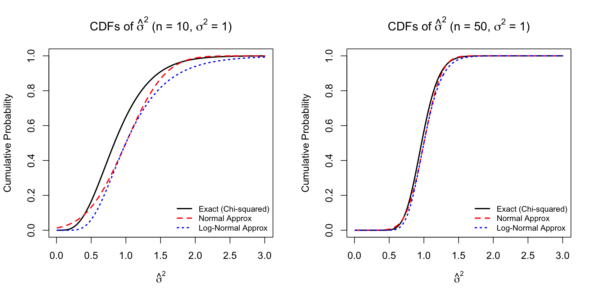
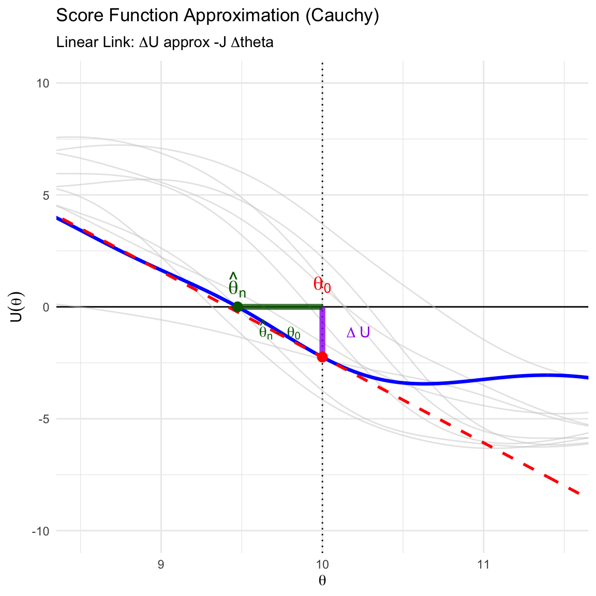
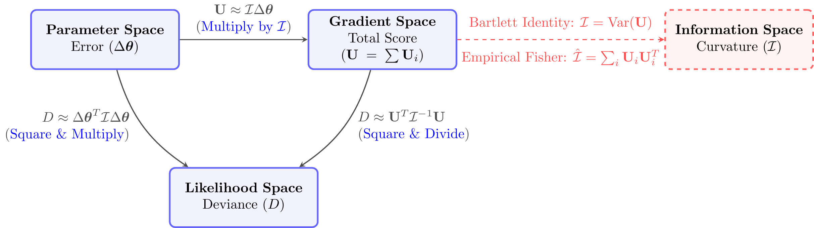
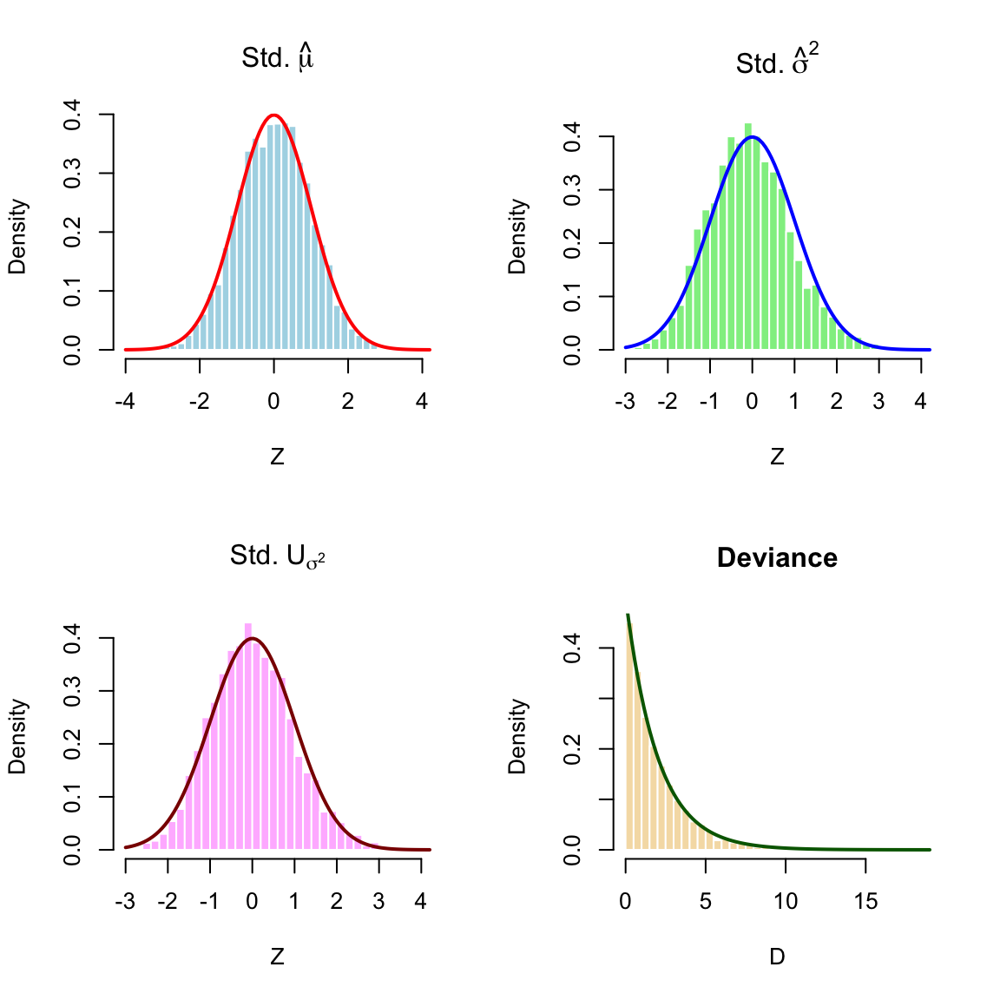
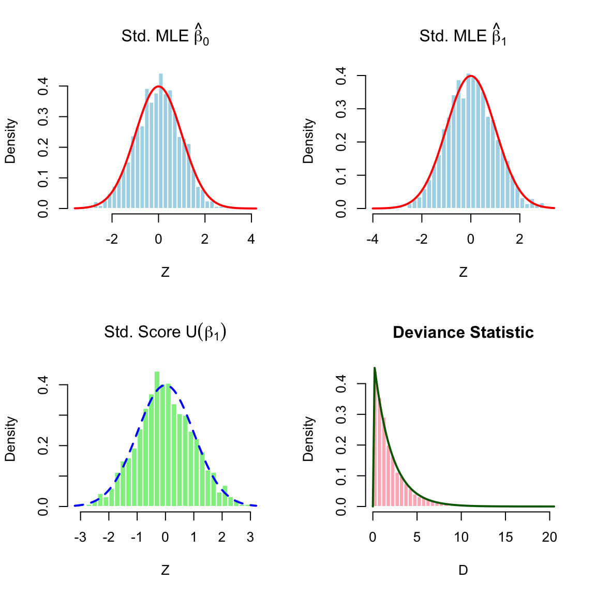
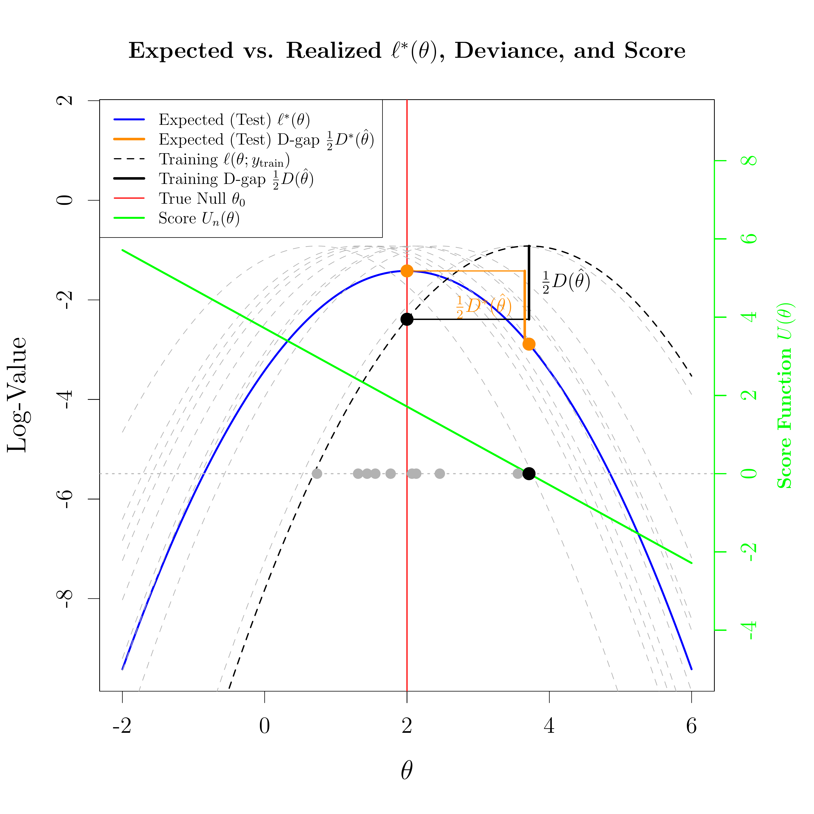

Definition 4.1 (Likelihood and Log-Likelihood) Let \(f(\mathbf{x}|\boldsymbol{\theta})\) be the joint probability density function (or mass function) of the data \(\mathbf{X} = (X_1, \dots, X_n)\).
Joint Likelihood Function:
When viewed as a function of the parameter \(\boldsymbol{\theta}\) given fixed data \(\mathbf{x}\), it is called the likelihood function: \[
L(\boldsymbol{\theta}; \mathbf{x}) = f(\mathbf{x}|\boldsymbol{\theta})
\]
Joint Log-Likelihood:
It is usually easier to maximize the natural logarithm of the likelihood: \[
\ell(\boldsymbol{\theta}; \mathbf{x}) = \log L(\boldsymbol{\theta}; \mathbf{x})
\]
Independent Observations:
If the observations \(X_1, \dots, X_n\) are independent, the joint likelihood factors into a product of individual densities. Let \(\ell(\boldsymbol{\theta}; x_i) = \log f(x_i|\boldsymbol{\theta})\) denote the log-likelihood for a single observation. The total log-likelihood is strictly the sum of the individual log-likelihoods: \[
\ell(\boldsymbol{\theta}; \mathbf{x}) = \sum_{i=1}^n \ell(\boldsymbol{\theta}; x_i)
\]
Definition 4.2 (Maximum Likelihood Estimation)Maximum Likelihood Estimator (MLE): The MLE \(\hat{\boldsymbol{\theta}}_{\text{MLE}}\) is the value in the parameter space \(\Theta\) that maximizes the likelihood (and equivalently, the log-likelihood) function: \[
\hat{\boldsymbol{\theta}}_{\text{MLE}}(\mathbf{x}) = \operatorname*{argmax}_{\boldsymbol{\theta} \in \Theta} \ell(\boldsymbol{\theta}; \mathbf{x})
\]
Definition 4.3 (Score Function) The score function is defined as the gradient of the log-likelihood with respect to the parameter vector \(\boldsymbol{\theta}\). Finding the MLE often involves solving the score equation \(\mathbf{U}(\boldsymbol{\theta}; \mathbf{x}) = \mathbf{0}\).
For a single independent observation \(x_i\), its score is: \[
\mathbf{u}(\boldsymbol{\theta}; x_i) = \nabla_{\boldsymbol{\theta}} \ell(\boldsymbol{\theta}; x_i)
\]
Sum for Independent Data:
By the linearity of the derivative operator, the total score function for independent observations is the sum of the individual score functions: \[
\mathbf{U}(\boldsymbol{\theta}; \mathbf{x}) = \sum_{i=1}^n \mathbf{u}(\boldsymbol{\theta}; x_i)
\]
Definition 4.4 (Fisher Information) The Fisher Information measures the curvature of the log-likelihood surface and, correspondingly, the amount of information the data carries about the unknown parameter.
Observed Fisher Information (\(\mathbf{J}\)):
This is the negative Hessian matrix of the log-likelihood, evaluated at the observed data.
Single Observation:\(\mathbf{J}_1(\boldsymbol{\theta}; x_i) = - \nabla^2_{\boldsymbol{\theta}} \ell(\boldsymbol{\theta}; x_i)\)
Sum for Independent Data:\[
\mathbf{J}_n(\boldsymbol{\theta}; \mathbf{x}) = \sum_{i=1}^n \mathbf{J}_1(\boldsymbol{\theta}; x_i)
\]
Expected Fisher Information (\(\mathcal{I}\)):
This is the covariance matrix of the score vector, which simplifies to the expected value of the observed Fisher information. It is a deterministic \(p \times p\) matrix.
Single Observation:\(\mathcal{I}_1(\boldsymbol{\theta}) = E_{\boldsymbol{\theta}} \left[ \mathbf{J}_1(\boldsymbol{\theta}; X_i) \right]\)
Sum for Independent Data:\[
\mathcal{I}_n(\boldsymbol{\theta}) = \sum_{i=1}^n \mathcal{I}_1(\boldsymbol{\theta})
\](Note: If the independent observations are also identically distributed (i.i.d.), this simplifies further to \(\mathcal{I}_n(\boldsymbol{\theta}) = n \mathcal{I}_1(\boldsymbol{\theta})\)).
4.1.2 Example: MLE of Normal Sample
Example 4.1 (Example: Normal Distribution (Exact Asymptotics)) Let \(X_1, \dots, X_n \overset{iid}{\sim} N(\theta, \sigma^2)\) with \(\sigma^2\) known. We explicitly derive the key quantities and map them to the four general asymptotic results under \(H_0: \theta = \theta_0\).
Derivation of Key Quantities
Log-Likelihood: Using the identity \(\sum (x_i - \theta)^2 = \sum (x_i - \overline{x})^2 + n(\overline{x} - \theta)^2\), the log-likelihood is a perfect quadratic centered at \(\overline{x}\): \[
\ell(\theta) = \underbrace{-\frac{n}{2}\log(2\pi\sigma^2) - \frac{1}{2\sigma^2}\sum_{i=1}^n (x_i - \overline{x})^2}_{C} - \frac{n}{2\sigma^2}(\theta - \overline{x})^2
\]
Score Function (\(U_n\)): Differentiating with respect to \(\theta\): \[
U_n(\theta) = \ell'(\theta) = \frac{n}{\sigma^2}(\overline{X}_n - \theta)
\]
Fisher Information (\(\mathcal{I}_n\)): Taking the negative second derivative: \[
\mathcal{I}_n(\theta) = -E[\ell''(\theta)] = \frac{n}{\sigma^2}
\]
Asymptotic Distributions
We now illustrate the four main theorems using these derived forms under \(H_0: \theta = \theta_0\):
Consistency: The MLE \(\hat{\theta}_n = \overline{X}_n \xrightarrow{p} \theta_0\) by the Weak Law of Large Numbers.
Asymptotic Normality of the Score: Evaluated at the null, the score follows a Normal distribution exactly: \[
U_n(\theta_0) \sim N(0, \mathcal{I}_n(\theta_0))
\]
Asymptotic Normality of the Estimator: The distribution of the standardized MLE centered at the null value is: \[
\sqrt{n}(\hat{\theta}_n - \theta_0) \sim N(0, \sigma^2) = N(0, \mathcal{I}_1(\theta_0)^{-1})
\]
Wilks’ Theorem (Deviance): The Deviance is defined as \(D = 2[\ell(\hat{\theta}) - \ell(\theta_0)]\).Using the quadratic form of the log-likelihood derived above, we can directly compute the values at the MLE (\(\hat{\theta} = \overline{x}\)) and the null (\(\theta_0\)):
\(\ell(\hat{\theta}) = C - \frac{n}{2\sigma^2}(\overline{x} - \overline{x})^2 = C\)
\(\ell(\theta_0) = C - \frac{n}{2\sigma^2}(\theta_0 - \overline{x})^2\)
Substituting these into the Deviance formula directly yields: \[
D = 2 \left[ C - \left( C - \frac{n}{2\sigma^2}(\overline{x} - \theta_0)^2 \right) \right] = \frac{n}{\sigma^2}(\overline{x} - \theta_0)^2
\]
Rearranging this expression reveals the square of a standard Normal variable (\(Z\)): \[
D = \left( \frac{\overline{X}_n - \theta_0}{\sigma/\sqrt{n}} \right)^2 = Z^2 \sim \chi^2_1
\] This confirms that for the Normal distribution, the \(\chi^2_1\) distribution of the Deviance is exact for any sample size \(n\).
4.1.2.1 Uniform Distribution (Boundary Case)
Example 4.2 Let \(X_1, \dots, X_n \overset{iid}{\sim} \operatorname{\text{Unif}}(0, \theta)\). The likelihood is: \[
L(\theta; \mathbf{x}) = \frac{1}{\theta^n} I(x_{(n)} \le \theta)
\] This function strictly decreases for \(\theta \ge x_{(n)}\) and is zero otherwise. Thus: \[
\hat{\theta}_{\text{MLE}} = x_{(n)}
\] Note that the Score equation approach fails here because the support depends on \(\theta\), making the log-likelihood discontinuous at the boundary.
4.1.3 Summary of Key Asymptotic Results for MLE
Under standard regularity conditions (e.g., i.i.d. observations, smooth density, and \(\boldsymbol{\theta}\) in the interior of \(\Theta\)), the MLE exhibits the following asymptotic properties as \(n \to \infty\):
Consistency:
The estimator converges in probability to the true parameter \(\boldsymbol{\theta}_0\). \[
\hat{\boldsymbol{\theta}}_{\text{MLE}} \xrightarrow{p} \boldsymbol{\theta}_0
\]
Asymptotic Normality of the Score:
The Score vector evaluated at the true parameter converges to a Normal distribution with variance equal to the Fisher Information. \[
\frac{1}{\sqrt{n}} \mathbf{U}(\boldsymbol{\theta}_0) \xrightarrow{d} N_p(\mathbf{0}, \mathcal{I}_1(\boldsymbol{\theta}_0))
\](Where \(\mathcal{I}_1\) is the expected information for a single observation).
Asymptotic Normality of the Estimator:
The MLE is asymptotically normal, unbiased, and efficient (achieving the Cramér-Rao lower bound). \[
\sqrt{n}(\hat{\boldsymbol{\theta}}_{\text{MLE}} - \boldsymbol{\theta}_0) \xrightarrow{d} N_p(\mathbf{0}, \mathcal{I}_1(\boldsymbol{\theta}_0)^{-1})
\]
Wilks’ Theorem (Likelihood Ratio Test for a Simple Null):
The Likelihood Ratio Statistic (Deviance) evaluates the drop in the log-likelihood from the Maximum Likelihood Estimator (\(\hat{\boldsymbol{\theta}}\)) to the true value (\(\boldsymbol{\theta}_0\)): \[
D = 2 \left( \ell(\hat{\boldsymbol{\theta}}) - \ell(\boldsymbol{\theta}_0) \right)
\] The statistic converges to a Chi-squared distribution: \[
D \xrightarrow{d} \chi^2_{p}
\](The degrees of freedom equal the dimension of the parameter vector \(p\), because all \(p\) parameters are fixed under the null. For a single scalar parameter \(\theta\), this reduces to \(\chi^2_1\)).
4.2 Newton-Raphson and Fisher Scoring Algorithms for Finding MLE
When the score equation \(\mathbf{U}(\boldsymbol{\theta}) = \mathbf{0}\) does not have a closed-form solution, we must rely on iterative numerical methods to find the Maximum Likelihood Estimator. The Newton-Raphson algorithm is the most common approach, utilizing the curvature of the log-likelihood surface to guide the search for the maximum.
4.2.1 Newton-Raphson Iteration
4.2.1.1 Newton-Raphson Iteration
Starting from an initial guess \(\boldsymbol{\theta}^{(0)}\), the algorithm updates the estimate of the parameter vector at each step \(t\) using the following recurrence relation:
Proof (Derivation via Taylor Expansion). The algorithm is derived by approximating the score function \(\mathbf{U}(\boldsymbol{\theta})\) with a first-order Taylor expansion around the current estimate \(\boldsymbol{\theta}^{(t)}\):
The Newton-Raphson algorithm specifically uses the Observed Information\(\mathbf{J}(\boldsymbol{\theta})\). If the expected Fisher Information \(\mathcal{I}(\boldsymbol{\theta}) = E[\mathbf{J}(\boldsymbol{\theta})]\) is used instead, the method is known as Fisher Scoring.
Convergence Speed
Newton-Raphson typically achieves quadratic convergence near the maximum, making it very fast when the initial guess is good.
Stability
Because \(\mathbf{J}(\boldsymbol{\theta})\) depends on the specific data observed, it can occasionally be non-positive definite in regions far from the MLE, which may cause the algorithm to diverge. Fisher Scoring is often more stable in these cases because \(\mathcal{I}(\boldsymbol{\theta})\) is always positive semi-definite for regular families.
4.2.3 Example: Poisson Regression (MLE)
Example 4.3 Consider a GLM where \(Y_i \sim \text{Poisson}(\lambda_i)\). We use the canonical link \(\log(\lambda_i(\boldsymbol{\beta})) = \mathbf{x}_i^\top \boldsymbol{\beta}\), which implies the mean function is \(\lambda_i(\boldsymbol{\beta}) = \exp(\mathbf{x}_i^\top \boldsymbol{\beta})\).
Exponential Family Representation
We rewrite the total log-likelihood by grouping terms associated with each \(\beta_j\):
Fisher Information (\(J\)): The information is the Hessian of the log-partition function: \[
J(\boldsymbol{\beta}) = \nabla^2 A(\boldsymbol{\beta}) = \mathbf{X}^\top \mathbf{W}(\boldsymbol{\beta}) \mathbf{X}
\] where \(\mathbf{W}(\boldsymbol{\beta}) = \text{diag}(\lambda_1(\boldsymbol{\beta}), \dots, \lambda_n(\boldsymbol{\beta}))\).
The details of procedure for deriving the above formula for score and fisher information matrix using scalar derivative is given in Section 4.6.
Newton-Raphson Algorithm for Poisson MLE
To find the MLE \(\hat{\boldsymbol{\beta}}\), we iterate until convergence:
Figure 4.1: Left: Observed data with the true and estimated mean functions; Right: Newton-Raphson path on the log-likelihood surface.
4.3 Convergence Theorems in Probability Theory
4.3.1 Weak Law of Large Numbers (WLLN)
Theorem 4.1 (Weak Law of Large Numbers (WLLN)) Let \(X_1, \dots, X_n\) be independent and identically distributed (i.i.d.) random variables with mean \(E[X_i] = \mu\) and finite variance \(\text{Var}(X_i) = \sigma^2 < \infty\).
Then, the sample mean \(\overline{X}_n = \frac{1}{n}\sum_{i=1}^n X_i\) converges in probability to \(\mu\): \[
\overline{X}_n \xrightarrow{p} \mu \quad \text{as } n \to \infty
\] Formal definition: For any \(\epsilon > 0\), \(\lim_{n \to \infty} P(|\overline{X}_n - \mu| > \epsilon) = 0\).
4.3.2 Central Limit Theorem for IID Cases
Theorem 4.2 (Central Limit Theorem for IID Cases) Let \(X_1, \dots, X_n\) be i.i.d. random variables with mean \(E[X_i] = \mu\) and finite variance \(0 < \text{Var}(X_i) = \sigma^2 < \infty\).
Then, the random variable \(\sqrt{n}(\overline{X}_n - \mu)\) converges in distribution to a normal distribution with mean 0 and variance \(\sigma^2\): \[
\sqrt{n}(\overline{X}_n - \mu) \xrightarrow{d} N(0, \sigma^2)
\]
Theorem 4.3 (Lindeberg-Feller CLT (For Non-Identical Distributions)) This variation is crucial for regression analysis (e.g., OLS properties with fixed regressors) where variables are independent but not identically distributed.
Let \(X_1, \dots, X_n\) be independent random variables with \(E[X_i] = \mu_i\) and \(\text{Var}(X_i) = \sigma_i^2\). Define the average variance\(\tilde{\sigma}_n^2\): \[
\tilde{\sigma}_n^2 = \frac{1}{n} \sum_{i=1}^n \sigma_i^2
\]
If the Lindeberg Condition holds: For every \(\epsilon > 0\), \[
\lim_{n \to \infty} \frac{1}{n \tilde{\sigma}_n^2} \sum_{i=1}^n E\left[ (X_i - \mu_i)^2 \cdot I\left( |X_i - \mu_i| > \epsilon \sqrt{n \tilde{\sigma}_n^2} \right) \right] = 0
\]
Then the standardized sum converges to a standard normal: \[
\frac{\sum_{i=1}^n (X_i - \mu_i)}{\sqrt{n \tilde{\sigma}_n^2}} \xrightarrow{d} N(0, 1)
\]
4.3.4 Approximating Distribution for Sample Mean (Non-i.i.d.)
Corollary 4.1 (Approximating Distribution for Sample Mean (Non-i.i.d.)) Under the conditions of the Lindeberg-Feller CLT, we can derive the asymptotic distribution for the sample mean \(\overline{X}_n = \frac{1}{n}\sum_{i=1}^n X_i\).
Let \(\overline{\mu}_n = \frac{1}{n}\sum_{i=1}^n \mu_i\) be the average mean. Note that the denominator in the CLT is simply \(\sqrt{n} \tilde{\sigma}_n\).
The standardized sum converges to \(N(0,1)\): \[
\frac{\sum (X_i - \mu_i)}{\sqrt{n \tilde{\sigma}_n^2}} = \frac{n(\overline{X}_n - \overline{\mu}_n)}{\sqrt{n} \tilde{\sigma}_n} = \frac{\sqrt{n}(\overline{X}_n - \overline{\mu}_n)}{\tilde{\sigma}_n} \xrightarrow{d} N(0, 1)
\]
This implies the following approximate distributions for large \(n\):
Note: If all \(X_i\) share the same mean \(\mu\), simply replace \(\overline{\mu}_n\) with \(\mu\).
4.3.5 Slutsky’s Theorem
Theorem 4.4 (Slutsky’s Theorem) Let \(X_n\) and \(Y_n\) be sequences of random variables. If \(X_n \xrightarrow{d} X\) and \(Y_n \xrightarrow{p} c\), where \(c\) is a constant, then:
Theorem 4.5 (Generalized Slutsky’s Theorem (Continuous Mapping)) The arithmetic operations in Slutsky’s theorem are special cases of a broader property.
Let \(X_n \xrightarrow{d} X\) and \(Y_n \xrightarrow{p} c\), where \(c\) is a constant. Let \(g: \mathbb{R}^2 \to \mathbb{R}^k\) be a function that is continuous at every point \((x, c)\) where \(x\) is in the support of \(X\).
Then: \[
g(X_n, Y_n) \xrightarrow{d} g(X, c)
\]
This implies that for any “well-behaved” algebraic combination (polynomials, exponentials, etc.) of a sequence converging in distribution and a sequence converging in probability to a constant, the limit behaves as if the constant were substituted directly.
4.3.7 Delta Methods
Theorem 4.6 (The Univariate Delta Method) Let \(X_n\) be a sequence of random variables that satisfies
for some constant \(\theta \in \mathbb{R}\) and variance \(\sigma^2 > 0\). Suppose \(g: \mathbb{R} \rightarrow \mathbb{R}\) is a function that is continuously differentiable at \(\theta\). Then,
where \(\tilde{\theta}\) lies strictly between \(X_n\) and \(\theta\).
Since \(\sqrt{n}(X_n - \theta) \xrightarrow{d} \mathcal{N}(0, \sigma^2)\), it follows that \(X_n \xrightarrow{p} \theta\). Because \(\tilde{\theta}\) is squeezed between \(X_n\) and \(\theta\), we also have \(\tilde{\theta} \xrightarrow{p} \theta\).
Assuming \(g'\) is continuous at \(\theta\), the Continuous Mapping Theorem implies \(g'(\tilde{\theta}) \xrightarrow{p} g'(\theta)\).
Rearranging the expansion and multiplying by \(\sqrt{n}\) gives:
By Slutsky’s theorem, the product converges in distribution to \(g'(\theta) \mathcal{N}(0, \sigma^2)\), which is distributed as \(\mathcal{N}(0, [g'(\theta)]^2 \sigma^2)\).
Theorem 4.7 (The Multivariate Delta Method) Let \(\mathbf{X}_n\) be a sequence of random vectors in \(\mathbb{R}^k\) such that:
Suppose \(\mathbf{g}: \mathbb{R}^k \rightarrow \mathbb{R}^m\) is a mapping that is continuously differentiable at \(\boldsymbol{\theta}\). Let \(\nabla \mathbf{g}(\boldsymbol{\theta})\) be the \(m \times k\) Jacobian matrix of partial derivatives of \(\mathbf{g}\) evaluated at \(\boldsymbol{\theta}\). Then,
4.3.8 Example: Asymptotic Normality of Sample Variance
Example 4.4 (Asymptotic Normality of Sample Variance and Its Logarithm) Let \(X_1, \dots, X_n \overset{iid}{\sim} \mathcal{N}(\mu, \sigma^2)\). We wish to derive the asymptotic distribution of the maximum likelihood estimator for variance, \(\hat{\sigma}^2\), its logarithm, and their corresponding Cumulative Distribution Functions (CDFs). The estimator is defined as:
Applying Convergence Theorems for \(\hat{\sigma}^2\)
Let \(W_i = (X_i - \mu)^2\). Since \(X_i \sim \mathcal{N}(\mu, \sigma^2)\), the scaled variable \(W_i/\sigma^2 \sim \chi^2_1\). The moments of \(W_i\) are \(E[W_i] = \sigma^2\) and \(\text{Var}(W_i) = 2\sigma^4\). By the standard Central Limit Theorem:
By Slutsky’s Theorem, the product converges in distribution to \(0\). Combining the terms, we establish the asymptotic distribution for the sample variance:
Applying the Delta Method for \(\log(\hat{\sigma}^2)\)
To find the asymptotic distribution of \(\log(\hat{\sigma}^2)\), we apply the Univariate Delta Method using the transformation \(g(x) = \log(x)\), with derivative \(g'(x) = \frac{1}{x}\). Evaluating the derivative at the true parameter value \(\sigma^2\) gives \(g'(\sigma^2) = \frac{1}{\sigma^2}\). By the Delta Method, the asymptotic variance is \([g'(\sigma^2)]^2 (2\sigma^4)\). Calculating this gives:
The scaled sum of squared deviations follows a Chi-squared distribution with \(n-1\) degrees of freedom, \(\frac{n\hat{\sigma}^2}{\sigma^2} \sim \chi^2_{n-1}\). The exact CDF of \(\hat{\sigma}^2\) evaluated at \(x\) is:
Using the asymptotic normal distribution from Step 3, for a finite sample size \(n\), we approximate \(\hat{\sigma}^2 \approx \mathcal{N}(\sigma^2, \frac{2\sigma^4}{n})\). The approximate CDF is:
Asymptotic Normal CDF based on \(\log(\hat{\sigma}^2)\)
Using the asymptotic distribution from Step 4, for a finite sample size \(n\), we approximate \(\log(\hat{\sigma}^2) \approx \mathcal{N}(\log(\sigma^2), \frac{2}{n})\). To find the CDF for \(\hat{\sigma}^2\) itself evaluated at \(x > 0\):
To provide a numerical illustration of these derivations, the following R code overlays the three CDFs. Note that this floating figure chunk is placed outside the example division to satisfy formatting constraints.
Code
# Set up plotting area for two plots side by side (1 row, 2 columns)par(mfrow =c(1, 2))# Create a function to avoid repeating the plotting codeplot_cdfs <-function(n, sigma2 =1) {# Sequence of x values for the plot x <-seq(0.01, 3, length.out =300)# 1. Exact Chi-squared CDF cdf_exact <-pchisq(n * x / sigma2, df = n -1)# 2. Asymptotic Normal CDF sd_norm <-sqrt(2* sigma2^2/ n) cdf_norm <-pnorm(x, mean = sigma2, sd = sd_norm)# 3. Log-Normal Approximation CDF sd_log <-sqrt(2/ n) cdf_log <-pnorm(log(x), mean =log(sigma2), sd = sd_log)# Plotting the CDFsplot(x, cdf_exact, type ="l", col ="black", lwd =2,ylab ="Cumulative Probability", xlab =expression(hat(sigma)^2),main =bquote(paste("CDFs of ", hat(sigma)^2, " (n = ", .(n), ", ", sigma^2, " = 1)")),ylim =c(0, 1))# Add the normal approximation curvelines(x, cdf_norm, col ="red", lwd =2, lty =2)# Add the log-normal approximation curvelines(x, cdf_log, col ="blue", lwd =2, lty =3)# Add a legendlegend("bottomright",legend =c("Exact (Chi-squared)", "Normal Approx", "Log-Normal Approx"),col =c("black", "red", "blue"),lwd =2, lty =c(1, 2, 3),bty ="n",cex =0.8) # Slightly smaller text to fit well in side-by-side view}# Generate the plot for n = 10plot_cdfs(n =10)# Generate the plot for n = 50plot_cdfs(n =50)# Reset plotting parameters to defaultpar(mfrow =c(1, 1))

Figure 4.2: Comparison of the Exact, Asymptotic Normal, and Log-Normal Approximated CDFs of the sample variance for n = 10 and n = 50.
4.4 Asymptotic Theory of Maximized Likelihood
4.4.1 Consistency of the MLE
4.4.1.1 IID Cases
Consistency establishes that as the sample size grows, the estimator converges in probability to the true parameter value.
Lemma 4.1 (Minimization of KL Divergence at the True Density) Let \(f(y|\boldsymbol{\theta}_0)\) be the true density of a random variable \(Y\), and let \(f(y|\boldsymbol{\theta})\) be any other density in the family. The Kullback-Leibler (KL) Divergence (or relative entropy) between the true distribution and a candidate distribution is defined as:
with equality if and only if \(f(y|\boldsymbol{\theta}) = f(y|\boldsymbol{\theta}_0)\) almost everywhere. This implies that the expected log-likelihood \(M(\boldsymbol{\theta}) = E_{\boldsymbol{\theta}_0}[\log f(Y|\boldsymbol{\theta})]\) is uniquely maximized at the true parameter \(\boldsymbol{\theta}_0\) (or true density for \(Y\)).
Proof.
Information Inequality via Jensen’s Inequality
Consider the negative KL divergence, which is the expected log-likelihood ratio. By Jensen’s Inequality, since the logarithm is a strictly concave function:
Because the log function is strictly concave, the equality \(E[\log Z] = \log E[Z]\) holds if and only if \(Z\) is a constant with probability 1. Here, \(Z = f(Y|\boldsymbol{\theta})/f(Y|\boldsymbol{\theta}_0)\), so equality holds if and only if \(f(y|\boldsymbol{\theta}) = f(y|\boldsymbol{\theta}_0)\) for almost all \(y\).
Theorem 4.8 (Consistency of MLE) Let \(Y_1, \dots, Y_n\) be i.i.d. with density \(f(y|\boldsymbol{\theta})\). Let \(\boldsymbol{\theta}_0\) be the true parameter. Assume the following Identifiability condition holds:
\[
f(y|\boldsymbol{\theta}) = f(y|\boldsymbol{\theta}_0) \text{ for almost all } y \implies \boldsymbol{\theta} = \boldsymbol{\theta}_0
\]
Under this and other standard regularity conditions (such as compactness of the parameter space \(\Theta\)), the Maximum Likelihood Estimator \(\hat{\boldsymbol{\theta}}_n\) satisfies:
Remark 4.1 (The Role of Identifiability). Identifiability is a fundamental requirement for consistency because it ensures that different parameter values correspond to different probability distributions.
Uniqueness of the Mapping
Mathematically, it means the mapping \(\boldsymbol{\theta} \to f(\cdot|\boldsymbol{\theta})\) is one-to-one. If the model were not identifiable, there would exist at least one \(\boldsymbol{\theta}_1 \neq \boldsymbol{\theta}_0\) such that \(f(y|\boldsymbol{\theta}_1) = f(y|\boldsymbol{\theta}_0)\).
Uniqueness of the Maximum
In the context of the proof, Lemma 4.1 shows that the KL divergence is zero if and only if the densities are identical. Identifiability allows us to move from the space of “densities” back to the space of “parameters,” ensuring that \(\boldsymbol{\theta}_0\) is the unique global maximum of the expected log-likelihood function \(M(\boldsymbol{\theta})\).
Failure of Consistency
Without identifiability, the data cannot distinguish between \(\boldsymbol{\theta}_0\) and \(\boldsymbol{\theta}_1\). The MLE would not converge to a single point but rather to the set of all parameters that produce the true density.
By the Weak Law of Large Numbers (WLLN), for any fixed \(\boldsymbol{\theta}\), \(M_n(\boldsymbol{\theta})\) converges in probability to its expectation:
According to Lemma 4.1, the limit function \(M(\boldsymbol{\theta})\) is maximized when the KL divergence is zero. This happens uniquely at \(\boldsymbol{\theta}_0\) due to identifiability.
Since \(\hat{\boldsymbol{\theta}}_n\) is the maximizer of \(M_n(\boldsymbol{\theta})\), and \(M_n(\boldsymbol{\theta})\) converges uniformly to \(M(\boldsymbol{\theta})\), the sequence of maximizers must converge to the maximizer of the limit function:
Figure 4.3: Consistency: Concentration of the Average Log-Likelihood for \(N(\theta, 1)\)
4.4.1.2 Non-IID Cases
In regression settings, observations are independent but not identically distributed (i.n.i.d.). We generalize the consistency result by requiring that the “average” information accumulates sufficiently.
Theorem 4.9 (Consistency of MLE (General Case)) Let \(Y_1, \dots, Y_n\) be independent observations with densities \(f_i(y|\boldsymbol{\theta})\) (e.g., depending on covariates \(x_i\)). Let \(\boldsymbol{\theta}_0\) be the true parameter.
Under the following conditions:
Parameter Space: Compact parameter space \(\Theta\).
Identification: For any \(\boldsymbol{\theta} \neq \boldsymbol{\theta}_0\), the average Kullback-Leibler divergence is strictly positive in the limit:
Uniform Convergence: The log-likelihood satisfies a Uniform Law of Large Numbers (ULLN).
Then \(\hat{\boldsymbol{\theta}}_n \xrightarrow{p} \boldsymbol{\theta}_0\).
Proof.
The Objective Function
The MLE maximizes the average log-likelihood: \[
M_n(\boldsymbol{\theta}) = \frac{1}{n} \sum_{i=1}^n \log f_i(Y_i|\boldsymbol{\theta})
\] Unlike the i.i.d. case, the terms in the sum have different expectations. We rely on a WLLN for Independent Variables (e.g., Chebyshev’s WLLN). Provided the variances are bounded, \(M_n(\boldsymbol{\theta})\) converges in probability to the average expectation: \[
M_n(\boldsymbol{\theta}) \xrightarrow{p} \overline{M}_n(\boldsymbol{\theta}) = \frac{1}{n} \sum_{i=1}^n E_{\boldsymbol{\theta}_0} [\log f_i(Y_i|\boldsymbol{\theta})]
\]Note: For consistency of the maximizer, we strictly require Uniform Convergence over \(\Theta\), not just pointwise convergence.
Identifying the Maximum (Average KL Divergence)
We compare the limit function at \(\boldsymbol{\theta}\) versus \(\boldsymbol{\theta}_0\). Consider the average difference: \[
\overline{M}_n(\boldsymbol{\theta}) - \overline{M}_n(\boldsymbol{\theta}_0) = \frac{1}{n} \sum_{i=1}^n E_{\boldsymbol{\theta}_0} \left[ \log \left( \frac{f_i(Y_i|\boldsymbol{\theta})}{f_i(Y_i|\boldsymbol{\theta}_0)} \right) \right]
\] By Jensen’s Inequality applied to each term in the sum: \[
E_{\boldsymbol{\theta}_0} \left[ \log \frac{f_i(Y_i|\boldsymbol{\theta})}{f_i(Y_i|\boldsymbol{\theta}_0)} \right] \le \log E_{\boldsymbol{\theta}_0} \left[ \frac{f_i(Y_i|\boldsymbol{\theta})}{f_i(Y_i|\boldsymbol{\theta}_0)} \right] = \log(1) = 0
\] Summing these inequalities implies that \(\overline{M}_n(\boldsymbol{\theta})\) is uniquely maximized at \(\boldsymbol{\theta}_0\) (provided the identification condition holds). Since the sample function \(M_n(\boldsymbol{\theta})\) converges uniformly to this maximized limit function, the argmax \(\hat{\boldsymbol{\theta}}_n\) converges to \(\boldsymbol{\theta}_0\).
4.4.2 Asymptotic Normality of the Score Vector
The Score function acts as the “engine” for the normality of the MLE. We treat the I.I.D. and non-I.I.D. cases separately.
4.4.2.1 IID Cases
Theorem 4.10 (Normality of Score (I.I.D.)) Let \(Y_1, \dots, Y_n\) be i.i.d. with density \(f(y|\boldsymbol{\theta})\). Define the Fisher Information matrix for a single observation as the expected outer product of the score: \[
\mathcal{I}_1(\boldsymbol{\theta}) = E\left[ \left( \nabla_{\boldsymbol{\theta}} \log f(Y_1|\boldsymbol{\theta}) \right) \left( \nabla_{\boldsymbol{\theta}} \log f(Y_1|\boldsymbol{\theta}) \right)^T \right]
\] Then, the scaled total score vector converges to a Normal distribution: \[
\frac{1}{\sqrt{n}} \mathbf{U}_n(\boldsymbol{\theta}_0; \mathbf{Y}) \xrightarrow{d} N(\mathbf{0}, \mathcal{I}_1(\boldsymbol{\theta}_0))
\]
Proof. The total score is the sum of independent score contributions: \[
\mathbf{U}_n(\boldsymbol{\theta}_0; \mathbf{Y}) = \sum_{i=1}^n \nabla \log f(Y_i|\boldsymbol{\theta}_0) = \sum_{i=1}^n \mathbf{u}_i
\] From Bartlett’s Identities, for each observation \(i\):
Since the terms \(\mathbf{u}_i\) are i.i.d. with finite variance, we apply the Multivariate Central Limit Theorem (Lindeberg-Lévy): \[
\frac{1}{\sqrt{n}} \sum_{i=1}^n \mathbf{u}_i \xrightarrow{d} N(\mathbf{0}, \text{Var}(\mathbf{u}_i)) = N(\mathbf{0}, \mathcal{I}_1(\boldsymbol{\theta}_0))
\]
4.4.2.2 Case B: The Non-I.I.D. Case (Regression Setting)
Theorem 4.11 (Normality of Score (Independent, Non-Identical)) Let \(Y_1, \dots, Y_n\) be independent but not necessarily identically distributed (e.g., due to different covariates). Let \(\mathcal{I}_n(\boldsymbol{\theta}_0) = \sum_{i=1}^n \text{Var}(\mathbf{u}_i)\) be the total information.
Define the Average Fisher Information Matrix: \[
\overline{\mathcal{I}}_n(\boldsymbol{\theta}_0) = \frac{1}{n} \mathcal{I}_n(\boldsymbol{\theta}_0) = \frac{1}{n} \sum_{i=1}^n E[\mathbf{u}_i \mathbf{u}_i^T]
\]
If the Lindeberg Condition is satisfied for the sequence of score vectors, then the standardized score converges to a standard Normal: \[
\left( \mathcal{I}_n(\boldsymbol{\theta}_0) \right)^{-1/2} \mathbf{U}_n(\boldsymbol{\theta}_0; \mathbf{Y}) \xrightarrow{d} N(\mathbf{0}, \mathbf{I}_p)
\](Here \(\mathbf{I}_p\) denotes the Identity matrix).
Approximating Distribution: If the average information converges to a positive definite limit \(\overline{\mathcal{I}}_n \to \mathcal{I}_{\infty}\), we have the following approximation for the scaled average score \(\sqrt{n} \overline{\mathbf{U}}_n(\boldsymbol{\theta}_0; \mathbf{Y})\): \[
\sqrt{n} \overline{\mathbf{U}}_n(\boldsymbol{\theta}_0; \mathbf{Y}) = \frac{1}{\sqrt{n}} \mathbf{U}_n(\boldsymbol{\theta}_0; \mathbf{Y}) \overset{\cdot}{\sim} N(\mathbf{0}, \overline{\mathcal{I}}_n(\boldsymbol{\theta}_0))
\]
Proof. This is a direct application of the Lindeberg-Feller Central Limit Theorem. The total score \(\mathbf{U}_n(\boldsymbol{\theta}_0; \mathbf{Y}) = \sum \mathbf{u}_i\) is a sum of independent random vectors with mean \(\mathbf{0}\) and variances \(\text{Var}(\mathbf{u}_i)\). Provided that no single observation’s score contribution dominates the sum (the Lindeberg condition), the standardized sum converges to a standard Normal distribution.
4.4.3 Asymptotic Normality of the MLE
We now transfer the normality from the Score function to the estimator \(\hat{\boldsymbol{\theta}}\) using a Taylor expansion (the Delta Method logic).
Definition 4.5 (Regularity Conditions for Asymptotic Normality) The following conditions are required to ensure the validity of the Taylor expansion and the convergence of the remainder term:
Interiority: The true parameter \(\boldsymbol{\theta}_0\) lies in the interior of the parameter space \(\Theta\).
Smoothness: The log-likelihood function \(\log f(y|\boldsymbol{\theta})\) is three times continuously differentiable with respect to \(\boldsymbol{\theta}\).
Boundedness: The third derivatives are bounded by an integrable function \(M(y)\) (to control the Taylor remainder).
Positive Information: The Fisher Information Matrix \(\mathcal{I}_1(\boldsymbol{\theta}_0)\) exists and is non-singular (positive definite).
Interchangeability: Differentiation and integration can be interchanged for the density \(f(y|\boldsymbol{\theta})\).
Theorem 4.12 (Asymptotic Normality of MLE) Under the regularity conditions above, the MLE \(\hat{\boldsymbol{\theta}}_n\) satisfies: \[
\sqrt{n}(\hat{\boldsymbol{\theta}}_n - \boldsymbol{\theta}_0) \xrightarrow{d} N\left(\mathbf{0}, [\mathcal{I}_1(\boldsymbol{\theta}_0)]^{-1}\right)
\]
Proof.
Taylor Expansion of Score Equation
We expand the Score function \(\mathbf{U}_n(\boldsymbol{\theta})\) around the true parameter \(\boldsymbol{\theta}_0\). Since \(\hat{\boldsymbol{\theta}}_n\) is the MLE, \(\mathbf{U}_n(\hat{\boldsymbol{\theta}}_n) = \mathbf{0}\).
Define the Observed Information Matrix as the negative Hessian: \[
\mathbf{J}_n(\boldsymbol{\theta}) = -\nabla^2 \ell_n(\boldsymbol{\theta})
\]
The fundamental approximation linking the random Score vector to the estimation error is: \[
\underbrace{\mathbf{U}_n(\hat{\boldsymbol{\theta}}_n)}_{=\mathbf{0}} \approx \mathbf{U}_n(\boldsymbol{\theta}_0) - \mathbf{J}_n(\boldsymbol{\theta}_0) (\hat{\boldsymbol{\theta}}_n - \boldsymbol{\theta}_0)
\]\[
\implies \quad \mathbf{U}_n(\boldsymbol{\theta}_0) \approx \mathbf{J}_n(\boldsymbol{\theta}_0) (\hat{\boldsymbol{\theta}}_n - \boldsymbol{\theta}_0)
\]
Scaling and Inversion
Multiply the link equation by \(\frac{1}{\sqrt{n}}\) and introduce \(n\) to the Observed Information term to stabilize the limits: \[
\frac{1}{\sqrt{n}} \mathbf{U}_n(\boldsymbol{\theta}_0) \approx \left( \frac{1}{n} \mathbf{J}_n(\boldsymbol{\theta}_0) \right) \sqrt{n}(\hat{\boldsymbol{\theta}}_n - \boldsymbol{\theta}_0)
\] Rearranging to solve for the estimator’s distribution: \[
\sqrt{n}(\hat{\boldsymbol{\theta}}_n - \boldsymbol{\theta}_0) \approx \left[ \frac{1}{n} \mathbf{J}_n(\boldsymbol{\theta}_0) \right]^{-1} \left[ \frac{1}{\sqrt{n}} \mathbf{U}_n(\boldsymbol{\theta}_0) \right]
\]
Convergence of Components
Numerator (Score): From the I.I.D. Score Normality theorem: \[
\frac{1}{\sqrt{n}} \mathbf{U}_n(\boldsymbol{\theta}_0) \xrightarrow{d} Z \sim N(\mathbf{0}, \mathcal{I}_1(\boldsymbol{\theta}_0))
\]
Denominator (Observed Info): By the WLLN, the average observed information converges to the expected information: \[
\frac{1}{n} \mathbf{J}_n(\boldsymbol{\theta}_0) = -\frac{1}{n} \sum_{i=1}^n \nabla^2 \log f(Y_i|\boldsymbol{\theta}_0) \xrightarrow{p} -E[\nabla^2 \log f] = \mathcal{I}_1(\boldsymbol{\theta}_0)
\]
Slutsky’s Theorem
Combining these via Slutsky’s Theorem (matrix inverse is a continuous mapping): \[
\sqrt{n}(\hat{\boldsymbol{\theta}}_n - \boldsymbol{\theta}_0) \xrightarrow{d} [\mathcal{I}_1(\boldsymbol{\theta}_0)]^{-1} Z
\] The variance of this limiting distribution is: \[
\text{Var}([\mathcal{I}_1]^{-1} Z) = \mathcal{I}_1^{-1} \text{Var}(Z) (\mathcal{I}_1^{-1})^T = \mathcal{I}_1^{-1} \mathcal{I}_1 \mathcal{I}_1^{-1} = \mathcal{I}_1^{-1}
\] Thus: \[
\sqrt{n}(\hat{\boldsymbol{\theta}}_n - \boldsymbol{\theta}_0) \xrightarrow{d} N\left( \mathbf{0}, [\mathcal{I}_1(\boldsymbol{\theta}_0)]^{-1} \right)
\]
Code
library(ggplot2)library(dplyr)# --- 1. Settings and Data Generation (Cauchy) ---set.seed(42)n_sim <-10n_obs <-10theta_0 <-10gamma <-1# Generate Datasetsdatasets <-matrix(rcauchy(n_sim * n_obs, location = theta_0, scale = gamma), nrow = n_sim, ncol = n_obs)# Define Score and Hessian Functionsscore_cauchy <-function(y, theta) {sum( (2* (y - theta)) / (1+ (y - theta)^2) )}hessian_cauchy <-function(y, theta) { u <- y - thetasum( (2* (u^2-1)) / (1+ u^2)^2 )}# --- 2. Analyze Main Dataset ---y_main <- datasets[1, ]# Find MLE numericallymle_res <-optimize(function(th) sum(dcauchy(y_main, location = th, log =TRUE)),interval =c(theta_0 -5, theta_0 +5), maximum =TRUE)theta_hat <- mle_res$maximum# Calculate Geometry at theta_0u_true <-score_cauchy(y_main, theta_0)slope_true <-hessian_cauchy(y_main, theta_0)# --- 3. Prepare Plot Data ---theta_seq <-seq(8, 12, length.out =300)# Curves Dataplot_data <-data.frame()for(i in1:n_sim) { y_curr <- datasets[i, ] u_vals <-sapply(theta_seq, function(th) score_cauchy(y_curr, th)) plot_data <-rbind(plot_data, data.frame(theta = theta_seq, U = u_vals, sim_id =as.factor(i), is_main = (i ==1)))}# Linear Approximation Data (Tangent Line)tangent_data <-data.frame(theta = theta_seq,U_lin = u_true + slope_true * (theta_seq - theta_0))# --- 4. Plotting ---ggplot() +# Axes Referencegeom_hline(yintercept =0, color ="black", size =0.5) +geom_vline(xintercept = theta_0, color ="black", linetype ="dotted") +# A. Background Curves (Grey)geom_line(data =subset(plot_data, !is_main), aes(x = theta, y = U, group = sim_id), color ="grey80", alpha =0.5) +# B. Main Curve (Blue) & Tangent (Red Dashed)geom_line(data =subset(plot_data, is_main), aes(x = theta, y = U), color ="blue", size =1.2) +geom_line(data = tangent_data, aes(x = theta, y = U_lin), color ="red", linetype ="dashed", size =1) +# C. THICK SEGMENTS for Delta U and Delta Theta# Vertical Segment (Delta U): From axis to curve at theta_0# Color: Purpleannotate("segment", x = theta_0, xend = theta_0, y =0, yend = u_true,color ="purple", size =2, alpha =0.8) +# Horizontal Segment (Delta Theta): From theta_0 to theta_hat along the axis# Color: Dark Greenannotate("segment", x = theta_0, xend = theta_hat, y =0, yend =0,color ="darkgreen", size =2, alpha =0.8) +# D. Pointsgeom_point(aes(x = theta_0, y = u_true), color ="red", size =3) +geom_point(aes(x = theta_hat, y =0), color ="darkgreen", size =3) +# E. Labels (Delta labels)annotate("text", x = theta_0 +0.15, y = u_true /2, label ="Delta~U", parse =TRUE, color ="purple", fontface ="bold", hjust =0) +annotate("text", x = (theta_0 + theta_hat)/2, y =-1.0, label ="hat(theta)[n] - theta[0]", parse =TRUE, color ="darkgreen", fontface ="bold") +# F. Parameter Labels (Revised Position)annotate("text", x = theta_hat, y =1, label ="hat(theta)[n]", parse =TRUE, color ="darkgreen", size =5) +annotate("text", x = theta_0, y =1, label ="theta[0]", parse =TRUE, color ="red", size =5) +# G. Stylingcoord_cartesian(ylim =c(-10, 10), xlim =c(8.5, 11.5)) +labs(title =expression(paste("Score Function Approximation (Cauchy)")),subtitle =expression(paste("Linear Link: ", Delta, "U ", approx, " -J ", Delta, "theta")),x =expression(theta), y =expression(U(theta))) +theme_minimal()

Figure 4.4: Linear Approximation of the Score Function: The vertical purple segment represents the Score at the true parameter (\(\Delta U\)), while the horizontal green segment shows the estimation error (\(\hat{\theta}_n - \theta_0\)). The red dashed line indicates the linear approximation (\(-J(\theta_0)\)).
Under the null hypothesis, the Deviance converges to a Chi-squared distribution: \[
D_n \xrightarrow{d} \chi^2_p
\] where \(p\) is the dimension of \(\boldsymbol{\theta}\).
Proof. We express the likelihood difference \(\Delta \ell\) in terms of the Score vector \(\mathbf{U}_n(\boldsymbol{\theta}_0)\) and apply the Central Limit Theorem directly to the Score.
Quadratic Approximation of Deviance
Expand \(\ell_n(\boldsymbol{\theta}_0)\) around the MLE \(\hat{\boldsymbol{\theta}}\). Since the gradient at the MLE is zero (\(\mathbf{U}_n(\hat{\boldsymbol{\theta}}) = \mathbf{0}\)), the first-order term vanishes: \[
\ell_n(\boldsymbol{\theta}_0) \approx \ell_n(\hat{\boldsymbol{\theta}}) - \frac{1}{2} (\hat{\boldsymbol{\theta}} - \boldsymbol{\theta}_0)^T \mathbf{J}_n(\hat{\boldsymbol{\theta}}) (\hat{\boldsymbol{\theta}} - \boldsymbol{\theta}_0)
\] Rearranging for the Deviance (\(D_n\)): \[
D_n = 2[\ell_n(\hat{\boldsymbol{\theta}}) - \ell_n(\boldsymbol{\theta}_0)] \approx (\hat{\boldsymbol{\theta}} - \boldsymbol{\theta}_0)^T \mathbf{J}_n(\hat{\boldsymbol{\theta}}) (\hat{\boldsymbol{\theta}} - \boldsymbol{\theta}_0)
\]
Substituting the Score
Recall the linear link we established in the Normality proof: \(\mathbf{U}_n(\boldsymbol{\theta}_0) \approx \mathbf{J}_n(\boldsymbol{\theta}_0)(\hat{\boldsymbol{\theta}} - \boldsymbol{\theta}_0)\). Inverting this relationship gives the parameter error in terms of the Score: \[
(\hat{\boldsymbol{\theta}} - \boldsymbol{\theta}_0) \approx \mathbf{J}_n^{-1} \mathbf{U}_n(\boldsymbol{\theta}_0)
\] Substitute this back into the Deviance equation: \[
D_n \approx (\mathbf{J}_n^{-1} \mathbf{U}_n)^T \mathbf{J}_n (\mathbf{J}_n^{-1} \mathbf{U}_n)
\]\[
\boxed{D_n \approx \mathbf{U}_n(\boldsymbol{\theta}_0)^T \mathbf{J}_n^{-1} \mathbf{U}_n(\boldsymbol{\theta}_0)}
\] This form (the Score Statistic) shows that the deviance is essentially the squared length of the Score vector, standardized by the Information.
Asymptotic Convergence
We rewrite the expression using normalized quantities to apply the limit theorems.
\[
D_n \approx \left( \frac{1}{\sqrt{n}} \mathbf{U}_n \right)^T \left( \frac{1}{n} \mathbf{J}_n \right)^{-1} \left( \frac{1}{\sqrt{n}} \mathbf{U}_n \right)
\] Taking the limit: \[
D_n \xrightarrow{d} \mathbf{Z}^T \mathcal{I}_1^{-1} \mathbf{Z}
\] Since \(\mathbf{Z} \sim N(\mathbf{0}, \mathcal{I}_1)\), the quadratic form follows a Chi-squared distribution: \[
\mathbf{Z}^T \mathcal{I}_1^{-1} \mathbf{Z} \sim \chi^2_p
\]
4.4.5 Summary of Asymptotic Approximations
In the limit as \(n \to \infty\) (or exactly for the Normal distribution), the log-likelihood behaves like a quadratic function. This leads to the following relationships between the Deviance (\(D\)), Score (\(\mathbf{U}\)), Error (\(\Delta \boldsymbol{\theta}\)), and Information (\(\mathcal{I}\)).
The vertical drop (\(D\)) is proportional to the squared horizontal distance (\(\Delta \boldsymbol{\theta}^2\)), scaled by curvature (\(\mathcal{I}\)). This is the Wald Statistic.
The slope (\(\mathbf{U}\)) increases linearly with horizontal distance (\(\Delta \boldsymbol{\theta}\)). The rate of increase is the curvature (\(\mathcal{I}\)).
The vertical drop (\(D\)) is proportional to the squared slope (\(\mathbf{U}^2\)), divided by curvature (\(\mathcal{I}\)). This is the Score Statistic.
Information Definition
\(\mathcal{I} \approx -\nabla \mathbf{U}\)
The curvature (\(\mathcal{I}\)) is the rate of change of the slope (\(\mathbf{U}\)) (negative Hessian).
The curvature (\(\mathcal{I}\)) is estimated by the “Sum of Squared Gradients” (Outer Products). This relies on Bartlett’s 2nd Identity: \(E[\mathcal{I}] = \text{Var}(\mathbf{U})\).

Figure 4.5: Asymptotic Relationships: The Information matrix \(\mathcal{I}\) bridges the spaces. Note the use of the empirical sum of outer products \(\sum \mathbf{U}_i \mathbf{U}_i^T\) to estimate curvature.
4.4.6 Asympotic Distributions of MLE of Normal Sample
Example 4.5 (Example: Normal Distribution with Unknown Variance (\(N(\mu, \sigma^2)\))) Let \(X_1, \dots, X_n \overset{iid}{\sim} N(\mu, \sigma^2)\). The parameter vector is \(\boldsymbol{\theta} = (\mu, \sigma^2)^T\). We assume both parameters are unknown.
Fisher Information Matrix \(\mathcal{I}_n(\boldsymbol{\theta})\): The matrix of negative expected second derivatives (note that the cross-terms are zero, implying orthogonality of \(\mu\) and \(\sigma^2\)): \[
\mathcal{I}_n(\boldsymbol{\theta}) = \begin{pmatrix} \frac{n}{\sigma^2} & 0 \\ 0 & \frac{n}{2\sigma^4} \end{pmatrix}
\]
Asymptotic Properties
Based on the general theory, we state the asymptotic distributions for the MLE, Score, and Deviance (testing the full vector \(H_0: \boldsymbol{\theta} = \boldsymbol{\theta}_0\)).
For testing \(H_0: (\mu, \sigma^2) = (\mu_0, \sigma_0^2)\) vs \(H_1: \text{unrestricted}\): \[
D = 2[\ell(\hat{\boldsymbol{\theta}}) - \ell(\boldsymbol{\theta}_0)] \xrightarrow{d} \chi^2_2
\]
Analytical Verification
We check if these asymptotic approximations match the exact finite-sample properties.
For the Mean (\(\mu\)):
Score:\(U_\mu = \frac{n}{\sigma^2}(\overline{X} - \mu)\). Since \(\overline{X}\) is Normal, \(U_\mu\) is exactly Normal for any \(n\).
MLE:\(\hat{\mu} = \overline{X}\) is exactly Normal for any \(n\).
For the Variance (\(\sigma^2\)):
Score:\(U_{\sigma^2} = \frac{1}{2\sigma^4} \left( \sum (X_i - \mu)^2 - n\sigma^2 \right)\). The term \(\sum (X_i - \mu)^2\) follows a scaled Chi-squared distribution (\(\sigma^2 \chi^2_n\)).
Verification: The Score is not exactly Normal (it is a shifted Gamma/Chi-squared). However, by the Central Limit Theorem, as \(n \to \infty\), a Chi-squared random variable converges to Normality. Thus, the property holds asymptotically.
For the Deviance (\(D\)):
The Deviance involves sums of squared errors and logarithms of sums of squares. It is not exactly Chi-squared for finite \(n\) (unlike the known-variance case). It converges to \(\chi^2_2\) as \(n\) increases.
Simulation Verification
We simulate 5000 datasets with \(n=100\). We calculate the standardized MLEs, standardized Scores, and the Deviance to check convergence.
Code
set.seed(2024)n_sim <-5000n <-100mu_true <-5sigma_sq_true <-4# sigma = 2# Expected Fisher Information TermsI_mu <- n / sigma_sq_trueI_sigma2 <- n / (2* sigma_sq_true^2)# Storagez_mle_mu <-numeric(n_sim)z_mle_sigma2 <-numeric(n_sim)z_score_sigma2 <-numeric(n_sim)deviance_vals <-numeric(n_sim)for(i in1:n_sim) { x <-rnorm(n, mean = mu_true, sd =sqrt(sigma_sq_true))# 1. Calculate MLEs mu_hat <-mean(x)# MLE for variance uses n, not n-1 sigma2_hat <-mean((x - mu_hat)^2) # 2. Standardized MLEs (Wald Statistics) z_mle_mu[i] <- (mu_hat - mu_true) *sqrt(I_mu) z_mle_sigma2[i] <- (sigma2_hat - sigma_sq_true) *sqrt(I_sigma2)# 3. Score for Sigma^2 at Truth# U_sigma2 = -n/(2*sigma^2) + sum(x-mu)^2 / (2*sigma^4) rss_true <-sum((x - mu_true)^2) u_sigma2 <--n/(2*sigma_sq_true) + rss_true/(2*sigma_sq_true^2) z_score_sigma2[i] <- u_sigma2 /sqrt(I_sigma2)# 4. Deviance (Likelihood Ratio)# ll(theta) = -n/2*log(2pi) - n/2*log(sigma^2) - RSS/(2*sigma^2) ll_hat <--n/2*log(2*pi) - n/2*log(sigma2_hat) - n/2# Second term simplifies ll_true <--n/2*log(2*pi) - n/2*log(sigma_sq_true) - rss_true/(2*sigma_sq_true) deviance_vals[i] <-2* (ll_hat - ll_true)}# --- Plotting ---par(mfrow =c(2, 2))# Plot 1: MLE for Mu (Exact Normal)hist(z_mle_mu, breaks =30, freq =FALSE, col ="lightblue",main =expression(Std. ~hat(mu)), xlab ="Z", border ="white")curve(dnorm(x), add =TRUE, col ="red", lwd =2)# Plot 2: MLE for Sigma^2 (Asymptotic Normal)hist(z_mle_sigma2, breaks =30, freq =FALSE, col ="lightgreen",main =expression(Std. ~hat(sigma)^2), xlab ="Z", border ="white")curve(dnorm(x), add =TRUE, col ="blue", lwd =2)# Plot 3: Score for Sigma^2 (Asymptotic Normal)hist(z_score_sigma2, breaks =30, freq =FALSE, col ="plum1",main =expression(Std. ~ U[sigma^2]), xlab ="Z", border ="white")curve(dnorm(x), add =TRUE, col ="darkred", lwd =2)# Plot 4: Deviance (Asymptotic Chi-sq with 2 df)hist(deviance_vals, breaks =30, freq =FALSE, col ="wheat",main ="Deviance", xlab ="D", border ="white")curve(dchisq(x, df =2), add =TRUE, col ="darkgreen", lwd =2)

Figure 4.6: Simulation of Normal (Unknown Variance) Asymptotics (n=100). Left/Center-Left: Standardized MLEs. Center-Right: Standardized Score for Variance. Right: Deviance (2 df).
4.4.7 Asymptotic Distributions of Poisson Regression
Example 4.6 (Simulation Study: Poisson Regression Asymptotics) In this example, we verify the asymptotic normality of the Maximum Likelihood Estimator (MLE) and the Chi-squared distribution of the Deviance statistic using a simulation study.
Simulation Setup
We consider a Generalized Linear Model (GLM) with a Poisson response and a canonical log-link function: \[
Y_i \sim \text{Poisson}(\lambda_i), \quad \log(\lambda_i) = \beta_0 + \beta_1 x_i
\]
True Parameters: We set the true coefficient vector to \(\boldsymbol{\beta} = (0.5, 1.5)^\top\).
Covariates: We generate \(n=200\) covariate values \(x_i\) from a Uniform(0, 1) distribution. These remain fixed across all simulations.
Data Generation: For each simulation iteration, we generate response vector \(\mathbf{y}\) using the true mean \(\lambda_i = \exp(0.5 + 1.5 x_i)\).
Model Fitting and Statistics
For each of the n_sim = 2000 generated datasets, we perform the following:
Fit the Model: We estimate \(\hat{\boldsymbol{\beta}}\) using the glm() function in R.
Calculate Standardized MLEs (Wald Statistic):
\[
Z_{\hat{\beta}_j} = \frac{\hat{\beta}_j - \beta_{j, \text{true}}}{\text{SE}(\hat{\beta}_j)}
\] The standard errors are derived from the inverse of the Fisher Information matrix, \(\mathcal{I}^{-1} = (\mathbf{X}^\top \mathbf{W} \mathbf{X})^{-1}\).
Calculate Standardized Score:
\[
Z_{U_j} = \frac{U_j(\boldsymbol{\beta}_{\text{true}})}{\sqrt{\text{Var}(U_j)}}
\] The score is evaluated at the true parameter values.
Calculate Deviance:
\[
D = 2 \left( \ell(\hat{\boldsymbol{\beta}}) - \ell(\boldsymbol{\beta}_{\text{true}}) \right)
\] This statistic compares the fitted model to the true model. According to Wilks’ theorem, this should follow a \(\chi^2_p\) distribution (where \(p=2\) is the number of parameters).
Simulation Code and Results
The histograms below overlay the theoretical asymptotic densities (Red/Blue lines) on top of the empirical histograms. The close alignment confirms that even for a moderate sample size of \(n=200\), the asymptotic approximations are highly accurate.
Code
library(latex2exp)# 1. Setupset.seed(42)n_sim <-2000n <-200beta_true <-c(0.5, 1.5)# Generate fixed covariatesx_cov <-runif(n, 0, 1)X_mat <-cbind(1, x_cov) # Design matrix# True mean vector and Fisher Information at Truthlambda_true <-exp(X_mat %*% beta_true)W <-diag(as.vector(lambda_true))I_fisher <-t(X_mat) %*% W %*% X_matinv_I <-solve(I_fisher)# Storage vectorsz_mle_b0 <-numeric(n_sim)z_mle_b1 <-numeric(n_sim)z_score_b1 <-numeric(n_sim)deviance_vals <-numeric(n_sim)# 2. Simulation Loopfor(i in1:n_sim) {# Generate response from true model y_sim <-rpois(n, lambda = lambda_true)# Fit GLM fit <-glm(y_sim ~ x_cov, family = poisson) beta_hat <-coef(fit)# A. Standardized MLEs (Wald)# Uses the TRUE information matrix for standardization to check theory strictly z_mle_b0[i] <- (beta_hat[1] - beta_true[1]) /sqrt(inv_I[1,1]) z_mle_b1[i] <- (beta_hat[2] - beta_true[2]) /sqrt(inv_I[2,2])# B. Standardized Score at Truth# U = X^T (Y - lambda) U <-t(X_mat) %*% (y_sim - lambda_true) z_score_b1[i] <- U[2] /sqrt(I_fisher[2,2])# C. Deviance (Likelihood Ratio)# D = 2 * (ll_hat - ll_true) ll_hat <-as.numeric(logLik(fit)) ll_true <-sum(dpois(y_sim, lambda_true, log =TRUE)) deviance_vals[i] <-2* (ll_hat - ll_true)}# 3. Visualization (2x2 Grid)par(mfrow =c(2, 2))# Plot 1: MLE Beta 0hist(z_mle_b0, breaks =30, freq =FALSE, col ="lightblue", main =TeX("Std. MLE $\\hat{\\beta}_0$"), xlab ="Z", border ="white")curve(dnorm(x), add =TRUE, col ="red", lwd =2)# Plot 2: MLE Beta 1hist(z_mle_b1, breaks =30, freq =FALSE, col ="lightblue", main =TeX("Std. MLE $\\hat{\\beta}_1$"), xlab ="Z", border ="white")curve(dnorm(x), add =TRUE, col ="red", lwd =2)# Plot 3: Score U_1 (Slope)hist(z_score_b1, breaks =30, freq =FALSE, col ="lightgreen", main =TeX("Std. Score $U(\\beta_1)$"), xlab ="Z", border ="white")curve(dnorm(x), add =TRUE, col ="blue", lwd =2, lty =2)# Plot 4: Deviancehist(deviance_vals, breaks =30, freq =FALSE, col ="lightpink", main ="Deviance Statistic", xlab ="D", border ="white")curve(dchisq(x, df =2), add =TRUE, col ="darkgreen", lwd =2)

Figure 4.7: Asymptotic distributions for Poisson Regression (n=200). Top Row: Standardized MLEs for Intercept and Slope (Normal). Bottom Left: Standardized Score for Slope (Normal). Bottom Right: Deviance Statistic (Chi-squared with 2 df).
4.4.8 Alkeike Information Criterion for Estimating Out-of-sample Deviance
Code
library(tikzDevice)library(tools)# 1. Define filenamestex_file <-"fig_expected_loglik.tex"pdf_file <-"fig_expected_loglik.pdf"options(tikzDocumentDeclaration ="\\documentclass[12pt]{extarticle}")# 2. Now open the device, matching the pointsizetikz(tex_file, width =7, height =7, standAlone =TRUE, pointsize =16)# --- START OF PLOT CODE ---theta_0 <-2sigma <-10n <-100se <- sigma /sqrt(n)x_vals <-seq(theta_0 -4*se, theta_0 +4*se, length.out =500)expected_log_lik <-dnorm(x_vals, mean = theta_0, sd = se, log =TRUE) -0.5y_min <-min(expected_log_lik)y_max <-dnorm(0, sd = se, log =TRUE) +2.5set.seed(123)x_bar_samples <-rnorm(10, mean = theta_0, sd = se)idx_max <-which.max(x_bar_samples)x_bar_max <- x_bar_samples[idx_max]grey_color <-"grey70"highlight_color <-"black"# Swapped from blueexpected_color <-"blue"# Swapped from blackscore_color <-"green"null_color <-"red"exp_color <-"darkorange"par(mar =c(5, 4, 4, 4) +0.3, cex.axis =1.2, cex.lab =1.4)plot(x_vals, expected_log_lik, type ="n", ylim =c(y_min, y_max),xlab ="$\\theta$", ylab ="Log-Value",main ="Expected vs. Realized $\\ell^*(\\theta)$, Deviance, and Score",frame.plot =TRUE)lines(x_vals, expected_log_lik, lwd =3, col = expected_color)abline(v = theta_0, col = null_color, lty =1, lwd =2)for (i in1:10) { log_lik_vals <-dnorm(x_bar_samples[i], mean = x_vals, sd = se, log =TRUE) l_width <-ifelse(i == idx_max, 2, 1) current_col <-ifelse(i == idx_max, highlight_color, grey_color)lines(x_vals, log_lik_vals, col = current_col, lty =2, lwd = l_width)}# 3. Draw Empirical Deviance segments for the largest x_barpeak_y <-dnorm(x_bar_max, mean = x_bar_max, sd = se, log =TRUE)null_y <-dnorm(x_bar_max, mean = theta_0, sd = se, log =TRUE)segments(x0 = theta_0, y0 = null_y, x1 = x_bar_max, y1 = null_y, col = highlight_color, lwd =2, lty =1)# Increased vertical lwd to 4segments(x0 = x_bar_max, y0 = null_y, x1 = x_bar_max, y1 = peak_y, col = highlight_color, lwd =4, lty =1)# Label updated and moved to the right (pos = 4)text(x_bar_max, (null_y + peak_y)/2, labels ="$\\frac{1}{2}D(\\hat{\\theta})$", pos =4, col = highlight_color, font =2, cex =1)points(theta_0, null_y, pch =16, col = highlight_color, cex =1.5)# 4. Draw Expected Drop on the expected curveexp_max_y <-dnorm(theta_0, mean = theta_0, sd = se, log =TRUE) -0.5exp_hat_y <-dnorm(x_bar_max, mean = theta_0, sd = se, log =TRUE) -0.5# Dynamically shift slightly LEFT to avoid the blue line and text collisionx_shift <- x_bar_max -0.06* se # Horizontal line at expected maxsegments(x0 = theta_0, y0 = exp_max_y, x1 = x_shift, y1 = exp_max_y, col = exp_color, lwd =2, lty =1)# Increased vertical lwd to 4segments(x0 = x_shift, y0 = exp_max_y, x1 = x_shift, y1 = exp_hat_y, col = exp_color, lwd =4, lty =1)# Short dotted connector back to the actual point on the curvesegments(x0 = x_bar_max, y0 = exp_hat_y, x1 = x_shift, y1 = exp_hat_y, col = exp_color, lwd =1, lty =3)# Label expected drop, placed on the left (pos = 2)text(x_shift, (exp_max_y + exp_hat_y)/2, labels ="$\\frac{1}{2}D^*(\\hat{\\theta})$", pos =2, col = exp_color, font =2, cex =1)# Mark the points on the expected curvepoints(x_bar_max, exp_hat_y, pch =16, col = exp_color, cex =1.5)points(theta_0, exp_max_y, pch =16, col = exp_color, cex =1.5)# 5. Add Score Function using a 2nd y-axispar(new =TRUE)score_vals <- x_bar_max - x_valsplot(x_vals, score_vals, type ="n", axes =FALSE, xlab ="", ylab ="", ylim =c(-5, 9))abline(h =0, col ="gray", lty =3, lwd =2)lines(x_vals, score_vals, col = score_color, lwd =3, lty =1)for (i in1:10) { p_size <-ifelse(i == idx_max, 1.5, 1.2) p_col <-ifelse(i == idx_max, highlight_color, grey_color)points(x_bar_samples[i], 0, col = p_col, pch =16, cex = p_size)}axis(4, col = score_color, col.axis = score_color, lwd =2)mtext("Score Function $U(\\theta)$", side =4, line =2.5, col = score_color, font =2)# 6. Updated Legendlegend("topleft", legend =c("Expected (Test) $\\ell^*(\\theta)$", "Expected (Test) D-gap $\\frac{1}{2}D^*(\\hat\\theta)$","Training $\\ell(\\theta; y_{\\mathrm{train}})$", "Training D-gap $\\frac{1}{2}D(\\hat{\\theta})$","True Null $\\theta_0$", "Score $U_n(\\theta)$" ),col =c( expected_color, # Swapped to use expected_color (blue) exp_color, highlight_color, # Swapped to use highlight_color (black) highlight_color, null_color, score_color ),lty =c(1, 1, 2, 1, 1, 1), lwd =c(3, 4, 2, 4, 2, 3), bg ="white", cex =0.85)# --- END OF PLOT CODE ---# 3. Close the device silentlyinvisible(dev.off())# 4. Compile the .tex file to a permanent .pdfinvisible(tools::texi2pdf(tex_file, clean =TRUE))# 5. Convert the PDF to a high-res PNG unconditionallyif (!requireNamespace("pdftools", quietly =TRUE)) install.packages("pdftools")png_file <-"fig_expected_loglik.png"invisible(pdftools::pdf_convert(pdf_file, format ="png", dpi =600, filenames = png_file))
Converting page 1 to fig_expected_loglik.png... done!
Code
# 6. Feed the PNG to Quarto for all formatsknitr::include_graphics(png_file)

Figure 4.8: Expected Log-Likelihood \(\ell^*(\theta)\) and 10 realized \(\ell(\theta)\) curves. The largest sample is highlighted in black, showing the 1/2 Deviance gap. The expected out-of-sample drop is marked in orange.
The fundamental challenge in model selection is estimating how well our fitted model will perform on unseen data. When we optimize a model using our sample data \(Y_{\mathrm{train}}\), we climb the realized (training) log-likelihood curve to arrive at the maximum likelihood estimate, \(\hat{\theta}\). Because \(\hat{\theta}\) inherently accommodates the idiosyncratic noise of that specific sample, its training performance is artificially inflated compared to the true parameter \(\theta_0\). However, if we evaluate this exact same estimate \(\hat{\theta}\) out-of-sample against new data \(Y_{\mathrm{test}}\), it performs worse than \(\theta_0\).
The Akaike Information Criterion (AIC) provides a geometric correction for this dual illusion by quantifying the total expected distance between the optimistic peak we observe and the true out-of-sample performance we actually care about.
1. The Realized Deviance Expansions
Let the deviance be defined as \(D(\theta; Y) = -2\ell(\theta; Y)\), and let the geometric distance between the estimate and the truth be represented by the Wald statistic: \[
W = (\hat{\theta} - \theta_0)^T \mathcal{I}_n(\theta_0) (\hat{\theta} - \theta_0).
\]
For the training data, the MLE \(\hat{\theta}\) is the global minimum. By Taylor expanding the deviance of the true parameter \(D(\theta_0; Y_{\mathrm{train}})\) around the estimate \(\hat{\theta}\), the first derivative vanishes, leaving: \[
D(\theta_0; Y_{\mathrm{train}}) \approx D(\hat{\theta}; Y_{\mathrm{train}}) + W
\] Rearranging this isolates the training deviance we observe: \[
\boxed{D(\hat{\theta}; Y_{\mathrm{train}}) \approx D(\theta_0; Y_{\mathrm{train}}) - W}.
\]
For the test data, \(\hat{\theta}\) is a fixed constant imported from the training phase. By Taylor expanding the test deviance \(D(\hat{\theta}; Y_{\mathrm{test}})\) around the true parameter \(\theta_0\), we get: \[
D(\hat{\theta}; Y_{\mathrm{test}}) \approx D(\theta_0; Y_{\mathrm{test}}) - 2(\hat{\theta} - \theta_0)^T U(Y_{\mathrm{test}}, \theta_0) + W
\] where \(U(Y_{\mathrm{test}}, \theta_0) = \nabla \ell(\theta_0; Y_{\mathrm{test}})\) is the score function evaluated on the test data.
To intuitively understand the behavior of this expansion, we can briefly average \(Y_{\mathrm{test}}\) away. If we take the expectation strictly over the test data (holding our training estimate \(\hat{\theta}\) fixed), the expected score evaluates to zero (\(\mathbb{E}[U(Y_{\mathrm{test}}, \theta_0)] = 0\)). This reveals that the expected out-of-sample performance for our specific model rises above the baseline by exactly the Wald statistic:
Returning to the fully realized values, by subtracting the training deviance from the test deviance, we can express the total observed optimism gap as a function of the deviance evaluated at the true parameter \(\theta_0\): \[
D(\hat{\theta}; Y_{\mathrm{test}}) - D(\hat{\theta}; Y_{\mathrm{train}}) \approx \left[ D(\theta_0; Y_{\mathrm{test}}) - D(\theta_0; Y_{\mathrm{train}}) \right] - 2(\hat{\theta} - \theta_0)^T U(Y_{\mathrm{test}}, \theta_0) + 2W
\]
This single equation contains the entire story of overfitting. For any given pair of test and training samples, the optimism gap depends on the baseline difference in the data, a cross-term of the estimate and the test score, and twice the Wald statistic.
3. The Expected AIC Penalty
To find the theoretical penalty, we take the expectation of this gap with respect to both \(Y_{\mathrm{train}}\) and \(Y_{\mathrm{test}}\).
Because \(\theta_0\) is a fixed, deterministic constant representing the true data-generating parameters, it carries no memory of the sampling process. As long as \(Y_{\mathrm{train}}\) and \(Y_{\mathrm{test}}\) are drawn from the same distribution, their expected deviance at \(\theta_0\) is identical and perfectly cancels out: \[
\mathbb{E}[D(\theta_0; Y_{\mathrm{test}})] - \mathbb{E}[D(\theta_0; Y_{\mathrm{train}})] = D^*(\theta_0) - D^*(\theta_0) = 0
\]
Furthermore, because the test data \(Y_{\mathrm{test}}\) is completely independent of the estimate \(\hat{\theta}\) (which was derived solely from \(Y_{\mathrm{train}}\)), the expectation of their cross-term evaluates to zero.
This leaves only the expectation of the Wald statistic. Because \(\hat{\theta}\) is asymptotically normal, \(W\) follows a \(\chi^2_p\) distribution, meaning its expected value is exactly the dimension of the parameter space: \(\mathbb{E}[W] = p\).
Applying the full expectation collapses the raw gap down to the pure penalty constant: \[
\mathbb{E}[D(\hat{\theta}; Y_{\mathrm{test}})] - \mathbb{E}[D(\hat{\theta}; Y_{\mathrm{train}})] = \mathbb{E}[2W] = 2p
\]
4. The Akaike Information Criterion (AIC)
In practice, we only have access to our specific sample, \(Y_{\mathrm{train}}\). We cannot observe the future test data \(Y_{\mathrm{test}}\), which means we cannot directly compute the true out-of-sample deviance \(D(\hat{\theta}; Y_{\mathrm{test}})\).
However, using the expectation derived above, we know that our observable training deviance is, on average, structurally optimistic by exactly \(2p\). To correct for this and construct an asymptotically unbiased estimator of the expected test deviance, we simply add this \(2p\) penalty back to the realized training deviance.
This defines the Akaike Information Criterion: \[
\mathrm{AIC} = D(\hat{\theta}; Y_{\mathrm{train}}) + 2p = -2\ell(\hat{\theta}; Y_{\mathrm{train}}) + 2p
\]
By minimizing the AIC across a set of candidate models, we are no longer just finding the model that best fits the current data; we are effectively minimizing the estimated out-of-sample deviance. The \(+2p\) term perfectly counterbalances the \(-W\) drop in the training deviance, preventing the model from over-allocating parameters to chase the idiosyncratic noise of the training sample.
4.5 Optimization in Deep Learning
In deep learning, the objective function is typically the negative log-likelihood of the dataset, often supplemented by a penalty term (regularization) to prevent overfitting. While the theoretical foundations of Maximum Likelihood Estimation remain the same, the practical application in high-dimensional neural networks faces significant computational challenges that necessitate specialized optimization strategies.
In traditional statistical models, \(\ell(\boldsymbol{\theta})\) is often globally concave, allowing algorithms like Newton-Raphson to converge reliably. Deep learning models, however, present a different landscape:
Non-convexity
The log-likelihood surface \(\ell(\boldsymbol{\theta})\) is highly non-convex with numerous local minima, saddle points, and plateaus.
High Dimensionality
The parameter vector \(\boldsymbol{\theta}\) can contain millions or billions of weights (\(p \gg 10^6\)). This makes the storage and inversion of the Observed Information Matrix \(\mathbf{J}(\boldsymbol{\theta})\) (the \(p \times p\) Hessian) computationally intractable, as its storage requires \(O(p^2)\) memory.
4.5.3 Penalized Likelihood (Regularization)
To improve generalization, we often optimize a penalized log-likelihood:
where \(\Omega(\boldsymbol{\theta})\) is a penalty function. Common examples include:
\(L_2\) Regularization (Weight Decay):\(\Omega(\boldsymbol{\theta}) = \frac{\lambda}{2} \|\boldsymbol{\theta}\|^2\), which corresponds to a Gaussian prior in a Bayesian framework.
\(L_1\) Regularization (Lasso):\(\Omega(\boldsymbol{\theta}) = \lambda \|\boldsymbol{\theta}\|_1\), which encourages sparsity in the network weights.
4.5.4 Scalable First-Order and Adaptive Optimization Methods
Because the exact Hessian is computationally prohibitive in high-dimensional settings, scalable optimization strategies rely on the Score vector (the gradient of the log-likelihood) to either take direct steps or approximate local curvature. By avoiding full \(\mathcal{O}(p^3)\) matrix inversions, these methods maintain a feasible memory and computational complexity of roughly \(\mathcal{O}(p)\), making them the standard for large-scale problems.
4.5.4.1 Stochastic Gradient and Momentum Methods
Stochastic Gradient Descent (SGD): Instead of computing the full score over the entire dataset, SGD uses a stochastic “mini-batch” estimate \(\mathbf{U}_{batch}\). The standard update rule is: \[
\boldsymbol{\theta}^{(t+1)} = \boldsymbol{\theta}^{(t)} + \alpha \mathbf{U}_{batch}(\boldsymbol{\theta}^{(t)})
\] While computationally trivial, SGD treats the parameter space as Euclidean (flat). It treats all dimensions equally, which leads to erratic zig-zagging if the likelihood surface is highly skewed.
Momentum-Based Methods: To mitigate the noise of stochastic mini-batches and navigate steep ravines, momentum maintains an exponentially decaying moving average of past scores. This acts as a low-pass filter, dampening orthogonal oscillations and accelerating the optimizer along consistent directions.
4.5.4.2 Natural SGD with Empirical Fisher Information
To correct the flat geometry of SGD, modern optimizers leverage the Second Moment Identity (Bartlett’s Identity) to capture curvature information without the \(\mathcal{O}(p^2)\) cost of computing the actual Hessian.
According to this identity, the Fisher Information Matrix \(\mathcal{I}(\boldsymbol{\theta})\) is exactly the covariance matrix of the score. Since \(E[\mathbf{U}] = \mathbf{0}\), this simplifies to the expected second moment: \[
\mathcal{I}(\boldsymbol{\theta}) = \text{Cov}_{\boldsymbol{\theta}_0}(\mathbf{U}) = E_{\boldsymbol{\theta}_0}[\mathbf{U}\mathbf{U}^\top]
\] This provides a computational lifeline: we can estimate second-order curvature using only first-order gradients.
The Empirical Fisher Estimate: In practical optimization, we cannot compute the expectation over all possible data. Instead, we compute the sample average of the cross-products of the score vectors using the observed mini-batch data: \[
\hat{\mathcal{I}}_{\text{empirical}} = \frac{1}{n_{batch}} \sum_{i=1}^{n_{batch}} \mathbf{U}_i(\mathbf{y}_i) \mathbf{U}_i(\mathbf{y}_i)^\top
\]
Full-Matrix NSGD: Using the full \(p \times p\) Empirical Fisher perfectly captures parameter correlations. The update step is \(\boldsymbol{\theta}^{(t+1)} = \boldsymbol{\theta}^{(t)} + \alpha \hat{\mathcal{I}}^{-1} \mathbf{U}_{batch}\). However, inverting this matrix requires \(\mathcal{O}(p^3)\) operations, rendering it impossible for massive models.
Diagonal NSGD: To handle high dimensionality, practitioners drop the off-diagonal elements, assuming parameters are roughly independent. The diagonal elements are computed via the element-wise (Hadamard) product: \[
\text{diag}(\hat{\mathcal{I}}) = \frac{1}{n_{batch}} \sum_{i=1}^{n_{batch}} [ \mathbf{U}_i \odot \mathbf{U}_i ]
\] This reduces the inversion complexity to \(\mathcal{O}(p)\) scalar divisions, scaling the gradient coordinate-wise.
Remark 4.2. A Note on the Empirical Approximation While \(\text{Cov}(\mathbf{U}) = E[\mathbf{J}]\) holds at the true parameter \(\boldsymbol{\theta}_0\), it may not hold perfectly when \(\boldsymbol{\theta}\) is far from the truth. In these regions, the empirical Fisher is technically an approximation of the variability of the gradients drawn from the training data, rather than the true geometric curvature of the model.
4.5.4.3 Adam, AdamW, and Adaptive Equivalents
Algorithms like RMSProp and Adam build directly upon the concept of the Diagonal Empirical Fisher, introducing moving averages and specific geometric modifications to handle the chaotic, non-convex landscapes of deep neural networks.
RMSProp: Maintains a running average of the squared scores for each parameter \(j\): \[
v_j^{(t)} = \gamma v_j^{(t-1)} + (1-\gamma) (U_j^{(t)})^2
\]
Adam (Adaptive Moment Estimation): Combines momentum (first moment) with the RMSProp variance estimate (second moment). It maintains bias-corrected running averages:
First Moment (\(m_j\)):\(m_j^{(t)} = \beta_1 m_j^{(t-1)} + (1 - \beta_1) U_j^{(t)}\)
Second Moment (\(v_j\)):\(v_j^{(t)} = \beta_2 v_j^{(t-1)} + (1 - \beta_2) (U_j^{(t)})^2\)
The Adam update rule is: \[
\theta_j^{(t+1)} = \theta_j^{(t)} + \alpha \frac{\hat{m}_j}{\sqrt{\hat{v}_j} + \epsilon}
\]The Square Root Departure: Notice that \(v_j\) serves as an estimate of the diagonal Fisher (\(\mathcal{I}_{jj}\)). True Natural SGD divides by the variance to maintain Riemannian invariance. Adam divides by the square root of the variance (the standard deviation). This makes Adam roughly bound its step sizes by \(\pm \alpha\), acting more like a smoothed “sign descent” algorithm than a mathematically strict Natural Gradient method.
Remark 4.3. AdamW: Decoupling Weight Decay from the Gradient
The transition from Adam to AdamW resolves a subtle but critical mathematical conflation between \(L_2\) regularization and weight decay that occurs in adaptive gradient methods.
The Breakdown in Standard Adam
In standard SGD, adding an \(L_2\) penalty to the loss (\(\ell_{reg} = \ell + \frac{\lambda}{2} \|\boldsymbol{\theta}\|^2\)) is mathematically equivalent to decaying the weights. However, if we pass the \(L_2\)-regularized gradient (\(\mathbf{U}_{reg} = \mathbf{U} + \lambda \boldsymbol{\theta}\)) into Adam, the regularization term \(\lambda \boldsymbol{\theta}\) gets divided by the adaptive denominator \(\sqrt{\hat{v}_j}\): \[
\theta_j^{(t+1)} = \theta_j^{(t)} - \alpha \frac{\hat{m}_j(\mathbf{U}_{reg})}{\sqrt{\hat{v}_j(\mathbf{U}_{reg})} + \epsilon}
\] This causes a severe structural problem: parameters with high historical gradients (large \(\hat{v}_j\)) receive less regularization penalty. The geometry of the likelihood surface inappropriately scales the geometric prior, often leading to poor generalization.
The AdamW Solution
AdamW fixes this by explicitly separating the two mechanisms. It computes the first and second moments strictly using the unregularized gradient \(\mathbf{U}\) to capture the true geometric curvature of the data. It then applies the weight decay directly to the parameter update, bypassing the adaptive scaling entirely: \[
\theta_j^{(t+1)} = \theta_j^{(t)} (1 - \eta \lambda) - \alpha \frac{\hat{m}_j(\mathbf{U})}{\sqrt{\hat{v}_j(\mathbf{U})} + \epsilon}
\] This decoupling ensures that the regularizer decays all weights uniformly, while the gradients are still adaptively scaled. This exact modification established AdamW as the foundational optimizer for training modern Large Language Models.
4.5.4.4 Re-sampling Natural SGD
To obtain a mathematically rigorous Natural Gradient, the expectation \(E[\mathbf{U}\mathbf{U}^\top]\) must be taken over the model’s predicted distribution, not the observed training data.
Re-sampling Natural SGD achieves this by bypassing the empirical training targets:
At each step, it simulates “fake” target data \(\mathbf{y}_{sim}\) from the current postulated model, \(p(\cdot | \mathbf{X}, \boldsymbol{\theta}^{(t)})\).
It calculates a simulated score vector \(\mathbf{U}_{sim}\) based on this generated data.
It estimates the true Fisher Information using the cross-products of the simulated scores: \(\hat{\mathcal{I}}_{\text{true}} \approx \mathbf{U}_{sim} \mathbf{U}_{sim}^\top\).
This Monte Carlo approach ensures the optimizer is navigating the actual probability manifold defined by the model, though it often requires a smaller learning rate to manage the variance introduced by the simulation step.
4.5.5 Example: The Poisson Regression Problem and Experimental Setup
In Poisson regression, we model count data \(y_i \in \{0, 1, 2, \dots\}\) given a vector of covariates \(\mathbf{x}_i \in \mathbb{R}^p\). Assuming \(y_i \sim \text{Poisson}(\lambda_i)\), the canonical log-link function connects the expected mean to the linear predictor: \[
\lambda_i = \exp(\mathbf{x}_i^\top \boldsymbol{\beta})
\] The goal of optimization is to find the parameter vector \(\boldsymbol{\beta}\) that minimizes the negative log-likelihood. The true gradient of this objective is \(\mathbf{g} = \mathbf{X}^\top(\boldsymbol{\lambda} - \mathbf{y})\), and the true Fisher Information Matrix (FIM), which acts as the Hessian, is \(\mathcal{I} = \mathbf{X}^\top \text{diag}(\boldsymbol{\lambda}) \mathbf{X}\).
4.5.5.1 Data Generation Strategy
To test these algorithms in a realistic, challenging environment, we simulate a high-dimensional dataset with significant collinearity:
Dimensions:\(n = 5000\) observations and \(p = 100\) features (plus an intercept).
Collinearity: The covariates \(\mathbf{X}\) are drawn from a Multivariate Normal distribution where every pair of variables has a high correlation of \(\rho = 0.8\). This ill-conditioned design matrix makes the curvature of the optimization landscape highly skewed, punishing methods that ignore parameter correlations.
True Parameters: The underlying ground-truth vector \(\boldsymbol{\beta}^*\) is sparse. Only the intercept and the first three predictors are active, with alternating signs and magnitudes: \(\boldsymbol{\beta}^* = (0.5, -1.0, -0.5, 1.0, 0, \dots, 0)^\top\). The remaining 97 parameters are identically zero.
4.5.5.2 Algorithm Comparison and Hyperparameters
All stochastic methods attempt to approximate the optimal update step \(\boldsymbol{\beta}^{(t+1)} = \boldsymbol{\beta}^{(t)} - \eta \mathcal{H}^{-1} \mathbf{g}\) using a mini-batch of data. They differ fundamentally in how they compute the curvature matrix \(\mathcal{H}\), whether they leverage the model’s statistical properties, and if they rely on simulated data.
To stabilize the variance across iterations, the Natural SGD methods utilize an Exponential Moving Average (EMA) with a decay rate of \(\rho = 0.95\) to smooth their Fisher Information estimates over time.
Method
Gradient (\(\mathbf{g}\)) Computation
Fisher/Curvature (\(\mathcal{H}\)) Computation
Re-sampling Used?
Tuning Settings
1. Standard SGD
Analytical on real data: \(\mathbf{X}_b^\top(\boldsymbol{\lambda}_b - \mathbf{y}_b)\)
None (Identity Matrix \(\mathbf{I}\))
No
\(\eta = 0.0001\), Batch = 50, Iter = 10k
2. Diagonal NSGD
Analytical on real data: \(\mathbf{X}_b^\top(\boldsymbol{\lambda}_b - \mathbf{y}_b)\)
4.5.5.3 Optimization Trajectories by Wall-Clock Time
By plotting the parameter estimates against actual execution time (in seconds) rather than iteration count, we visualize the fundamental trade-off in high-dimensional optimization: the cost of accurate curvature calculation versus the speed of frequent updates.
Figure 4.9: Informal demonstration of parameter traces over wall-clock execution time for four stochastic optimization strategies (\(n=5000, p=100\)). Dashed lines represent the true parameter values. Inactive parameters (Beta4 to Beta13) are plotted in grey to demonstrate shrinkage and noise around zero.
4.5.5.4 Interpretation of Convergence Behaviors
The visual results clearly underscore the weaknesses of uncorrected gradients in highly collinear spaces. Standard SGD requires a severely restricted learning rate to prevent divergence, causing the parameters to drift aimlessly; the inactive coefficients (in grey) completely fail to shrink back to zero within the allotted time limit.
In contrast, incorporating the Fisher Information corrects for the warped geometry. Diagonal NSGD rapidly pushes the grey noise parameters toward zero, though it chatters slightly around the true active values due to ignoring the off-diagonal correlations. The Full-Matrix NSGD provides the most direct, stable path to convergence with minimal variance, but takes noticeably longer per step to invert the full \(100 \times 100\) matrix. Finally, the Re-sampling NSGD demonstrates that we can successfully approximate the diagonal Fisher geometrically by injecting simulated model noise, achieving shrinkage comparable to the analytical diagonal method despite requiring a slightly more conservative learning rate to manage the Monte Carlo variance.
4.6 Appendix: Derivation of Score and Information in Poisson Regression
In a Poisson Generalized Linear Model with a canonical link, the mean is modeled as \(\lambda_i(\boldsymbol{\beta}) = \exp(\mathbf{x}_i^\top \boldsymbol{\beta})\).
Throughout these derivations, we will utilize the Hadamard product (element-wise multiplication), denoted by the operator \(\odot\), to provide concise vectorized representations. For two vectors \(\mathbf{a}\) and \(\mathbf{b}\) of the same dimension, their Hadamard product \(\mathbf{a} \odot \mathbf{b}\) yields a vector with elements \(a_i b_i\). When applied between a column vector and a matrix, the operation broadcasts the element-wise multiplication down the columns of the matrix.
The derivation of the Score vector and the Fisher Information matrix relies on the chain rule and the properties of the exponential function.
4.6.1 Derivation of the Score Vector \(\mathbf{U}(\boldsymbol{\beta})\)
The Score vector is defined as the gradient of the log-likelihood with respect to the parameter vector \(\boldsymbol{\beta}\).
Differentiate the Log-Likelihood Starting from the log-likelihood function:
\[
\ell(\boldsymbol{\beta}) = \sum_{i=1}^n \left( y_i (\mathbf{x}_i^\top \boldsymbol{\beta}) - \exp(\mathbf{x}_i^\top \boldsymbol{\beta}) - \log(y_i!) \right)
\] We take the partial derivative with respect to a single component \(\beta_j\): \[
\frac{\partial \ell}{\partial \beta_j} = \sum_{i=1}^n \left( y_i \frac{\partial (\mathbf{x}_i^\top \boldsymbol{\beta})}{\partial \beta_j} - \frac{\partial \exp(\mathbf{x}_i^\top \boldsymbol{\beta})}{\partial \beta_j} \right)
\]
Apply the Chain Rule Note that \(\frac{\partial (\mathbf{x}_i^\top \boldsymbol{\beta})}{\partial \beta_j} = x_{ij}\). Using the chain rule on the exponential term:
\[
\frac{\partial \ell}{\partial \beta_j} = \sum_{i=1}^n (y_i - \lambda_i(\boldsymbol{\beta})) x_{ij}
\] Let \(\mathbf{x}^{(j)}\) denote the \(n \times 1\) vector of the \(j\)-th covariate across all observations. Using the Hadamard product \(\odot\), the \(j\)-th component of the score vector can be written equivalently as the sum of the elements in the resulting vector: \[
U_j(\boldsymbol{\beta}) = \sum \left( (\mathbf{y} - \boldsymbol{\lambda}(\boldsymbol{\beta})) \odot \mathbf{x}^{(j)} \right)
\] In full matrix notation, this corresponds to: \[
\mathbf{U}(\boldsymbol{\beta}) = \mathbf{X}^\top (\mathbf{y} - \boldsymbol{\lambda}(\boldsymbol{\beta}))
\]
4.6.2 Derivation of the Observed Fisher Information \(J(\boldsymbol{\beta})\)
The Observed Information is the negative Hessian matrix of the log-likelihood.
Differentiate the Score We take the derivative of the \(j\)-th component of the score, \(U_j = \sum_{i=1}^n (y_i - \lambda_i(\boldsymbol{\beta})) x_{ij}\), with respect to \(\beta_k\):
Differentiate the Mean Function Recall \(\lambda_i(\boldsymbol{\beta}) = \exp(\mathbf{x}_i^\top \boldsymbol{\beta})\). Its derivative with respect to \(\beta_k\) is:
Construct the Information Matrix The \((j, k)\) element of the Hessian is:
\[
H_{jk} = -\sum_{i=1}^n \lambda_i(\boldsymbol{\beta}) x_{ij} x_{ik}
\] The Observed Information \(J(\boldsymbol{\beta}) = -H\) is therefore: \[
J(\boldsymbol{\beta})_{jk} = \sum_{i=1}^n \lambda_i(\boldsymbol{\beta}) x_{ij} x_{ik}
\] Using the Hadamard product \(\odot\), the \((j,k)\)-th element is elegantly expressed as the sum of the element-wise product of three vectors (the predicted means and the two covariate columns): \[
J(\boldsymbol{\beta})_{jk} = \sum \left( \boldsymbol{\lambda}(\boldsymbol{\beta}) \odot \mathbf{x}^{(j)} \odot \mathbf{x}^{(k)} \right)
\] In matrix form, let \(\mathbf{W}(\boldsymbol{\beta})\) be a diagonal matrix where \(W_{ii} = \lambda_i(\boldsymbol{\beta})\). Then: \[
J(\boldsymbol{\beta}) = \mathbf{X}^\top \mathbf{W}(\boldsymbol{\beta}) \mathbf{X}
\]
4.6.3 Derivation of the Expected Fisher Information \(\mathcal{I}(\boldsymbol{\beta})\) via \(\text{Var}(\mathbf{U})\)
By the fundamental properties of likelihoods, the Expected Fisher Information matrix \(\mathcal{I}(\boldsymbol{\beta})\) is equivalent to the variance-covariance matrix of the Score vector: \(\mathcal{I}(\boldsymbol{\beta}) = \text{Var}(\mathbf{U}(\boldsymbol{\beta}))\).
Set Up the Variance Expression Let \(u_{ij}(\boldsymbol{\beta})\) denote the gradient contribution of the \(i\)-th observation with respect to the parameter \(\beta_j\):
\[
u_{ij}(\boldsymbol{\beta}) = (y_i - \lambda_i(\boldsymbol{\beta})) x_{ij}
\] The \(j\)-th component of the total Score vector is the sum of these individual observation gradients: \[
U_j(\boldsymbol{\beta}) = \sum_{i=1}^n u_{ij}(\boldsymbol{\beta})
\] We find the \((j,k)\)-th element of the Expected Information by taking the covariance between the \(j\)-th and \(k\)-th score components. Since the individual observations \(i\) are independent, the cross-covariances between different observations (\(i \neq i'\)) are zero: \[
\mathcal{I}(\boldsymbol{\beta})_{jk} = \text{Cov}(U_j(\boldsymbol{\beta}), U_k(\boldsymbol{\beta})) = \sum_{i=1}^n \text{Cov}(u_{ij}(\boldsymbol{\beta}), u_{ik}(\boldsymbol{\beta}))
\]
Apply Variance Properties Expanding the covariance term for the \(i\)-th observation using our definition of \(u_{ij}\) and \(u_{ik}\):
\[
\text{Cov}(u_{ij}(\boldsymbol{\beta}), u_{ik}(\boldsymbol{\beta})) = \text{Cov}((y_i - \lambda_i(\boldsymbol{\beta})) x_{ij}, (y_i - \lambda_i(\boldsymbol{\beta})) x_{ik})
\] Because the predicted mean \(\lambda_i(\boldsymbol{\beta})\) and the covariates \(x_{ij}, x_{ik}\) are treated as fixed constants, the covariance simplifies to the variance of the random variable \(y_i\) scaled by the covariates. Therefore, summing over all observations gives: \[
\mathcal{I}(\boldsymbol{\beta})_{jk} = \sum_{i=1}^n x_{ij} x_{ik} \text{Var}(y_i)
\]
Substitute the Poisson Variance For a Poisson distribution, the variance is equal to the mean: \(\text{Var}(y_i) = \lambda_i(\boldsymbol{\beta})\). Substituting this known variance into our equation gives:
\[
\mathcal{I}(\boldsymbol{\beta})_{jk} = \sum_{i=1}^n \lambda_i(\boldsymbol{\beta}) x_{ij} x_{ik}
\] Just as with the Observed Information, this \((j,k)\)-th element takes the exact same form as the sum of the Hadamard product of the three vectors: \[
\mathcal{I}(\boldsymbol{\beta})_{jk} = \sum \left( \boldsymbol{\lambda}(\boldsymbol{\beta}) \odot \mathbf{x}^{(j)} \odot \mathbf{x}^{(k)} \right)
\]
Construct the Matrix Form The full matrix can therefore be written using the exact same weight matrix \(\mathbf{W}(\boldsymbol{\beta})\):
Remark 4.4 (Canonical Link Advantage). Notice that because we used the canonical link (\(\log \lambda = \eta\)), the second derivative of the log-likelihood (the Hessian) does not depend on the observed data \(y_i\). It only depends on the predicted means \(\lambda_i(\boldsymbol{\beta})\). Consequently, the Observed Information and the Expected Information are identical: \[
J(\boldsymbol{\beta}) = \mathcal{I}(\boldsymbol{\beta})
\] This is a unique property of canonical links in Generalized Linear Models.